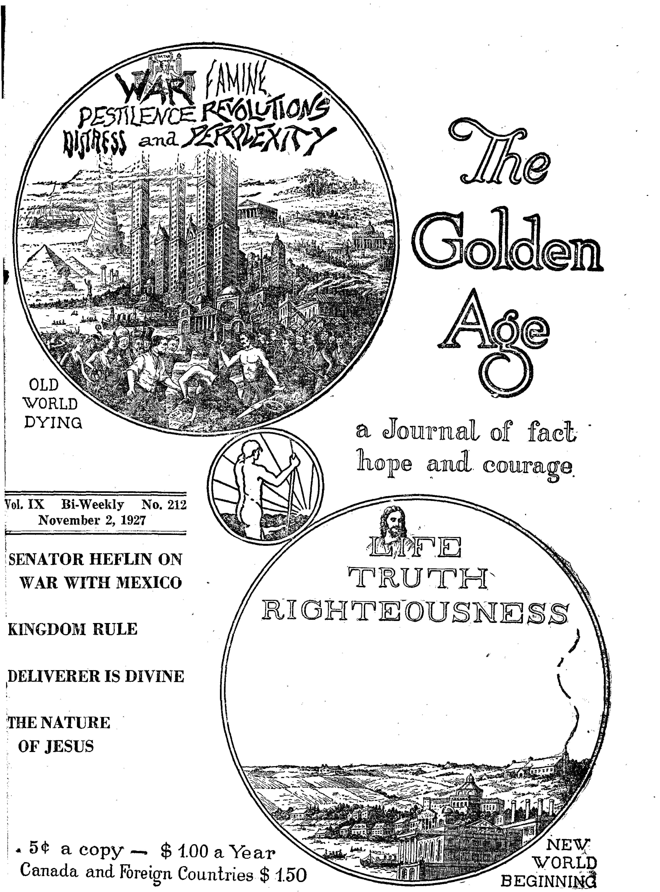
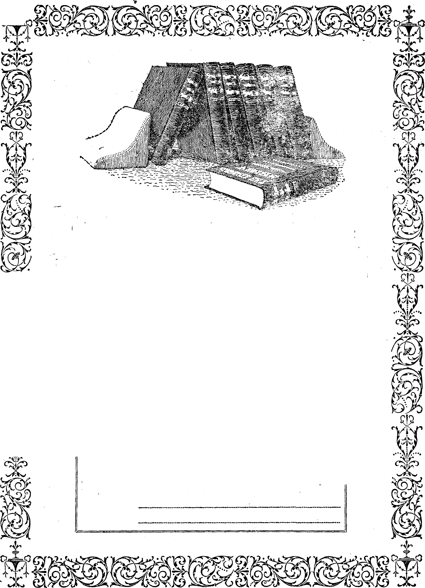

1L wr " y j -1 * -111 "■ J ■ JWi w. I
— ■■ ——........ ' ------= ■- -----ftgtf
*
Social and Educational
Entertaining Our Friends » • 73
* c
Finance—Commerce—Transportation
Single Tax Theory Proven Correct . ♦ . .......«
Political—Domestic and Foreign
Senator Heflin on War with Mexico ........... 67
“Around this Earthly Ball” ............*
D’Annunzio Looking for-Trouble
Origin of the Balfour Declaration .......... .
Items of Interest from Great Britain . .
News from Our Canadian Correspondent ...
Central America Wants Free S'peech
Agriculture and Husbandry
■■ 1
Science and Invention
New Zealand Afflicted with Goitre
■ Travel and Miscellany What is the Matter with This?.....
80
80
73
Wied Elephants Stop Fike .......,
Earthquakes in Palestine.........
- Religion and Philosophy
Astrology is the Bunk..........
Papal Passports Now Recognized ...... Why the Churches Lose ......... Kingdom Rule .............
Plenty for All.............
Deliverer is Divine ...........
The Nature of Jesus...........
A Good Woman’s Prayer Answered . . . . . Little Studies fob Little People ......
71
71
78
79
95
Published every other Wednesday at 117 Adams Street, Brooklyn, N. Y.. U. S. A., by WOODWORTH, HUDGINGS & MARTIN
Copartners and Proprietors Address: 117 Adams Street, Brooklyn, X Y., U. S. A JCLAYT0N J. WOODWORTH « Editor ROBERT J. MARTIN , Business Manager WM, R1. HUDGINGS « . Sec’y and Treas.
Five Cents a Copy—$1.00 a Year - Make Remittances to TUB GOLDEN AGE% Notice to Subscribers: We do not, as a rule, send a card of acknowledgment for a renewal or for a new subscription. A renewal blank (carrying notice of expiration) will be sent with the journal one month before the subscription expires. Change of address, when requested, may be expected to appear on address label within one months Foreign Offices : British . •» •. 34 Craven Terrace, Lancaster Gate, London W. 2 Canadian ......... 88-40 Irwin Avenue, Toronto, Ontario Australasian ....... 495 Collins Street, Melbourne, Australia South African • .,«.« 6 Lelie Street, Cape Town, South Africa
Entered as second-class matter at Brooklyn, N. Y.. under the Act of March 3. 1879
li
1
LJ
3
I
■1
r .
$
■d
■i
Volume IX
Brooklyn, N. Y., Wednesday, November 2, 1927
Number 212
Senator Heflin of Alabama is worthy of „ special note at this time as a statesman who I dares to tell the truth on unpleasant subjects, and who, probably more than any other man, has exercised a preponderating influence in keeping the United States out of a war, a whol-L ly unjust Avar, against Mexico. From various of his speeches, extending over January, Feb-■ ruary and March, 1927, we present brief ex-• tracts. Some of the extracts are from other ; original sources, but Quoted by Senator Heflin. 5 Senator Heflin’s exposures may be said to be-i gin with what was intended to be a declaration [ of Avar, presented March 11, 1926. Of this he I
I says:
I When it was thought that the time was ripe, on March 11, Representative Boylan, a loyal son of the y church, from Romish-Tammaliy-ruled New York City, |: introduced a resolution in Congress as follows: Resolved f by the House of Representatives, the Senate concurring, i That it is the sense of Congress that the President should forthwith withdraw diplomatic recognition of the Gov-' eminent of Mexico until such time as the policies and ' conduct of the said Government in relation to educational and religious institutions of all creeds and nationalities justify a resumption of relations.
It seems that the original plan was to get this
declaration of war through without any publicity, at least until it was too late. Contrary to all legislative precedent, not only were the hearings oh the resolution all monopolized by Roman Catholics in favor of war, but the proceedings were in secret and were kept from publication. Senator Heflin laid this wide open, and
referring to his exposures said to the Senate later that he had called their attention to <
» A secret, behind-closed-door proceeding hatching out I a war in a Republican committee room and none of !' the proceedings published, everything kept hidden; the | Knights of Columbus flooding the country with their F
pamphlets and just ready to sound the call to arms when we stopped them by our righteous protest in the open Senate! Senators, you know that is true.
As soon as he began to make his exposures, Senator Heflin noted that hardly a paper in the country had either the honesty or the courage to tell what he had revealed; but that for the most part they lied, and twisted and distorted everything he had said, concealing the important truths and feeding the public on Jesuit swill, as is their almost universal custom.
Senator Heflin paid his respects to the Baltimore Sun as follows:
The next paper to which I wish to pay my respects is the Baltimore Sun, which is controlled by this Roman Catholic hierarchy. Here is an article in the Sun about \ a column and a half in length: and I charge that this Roman Catholic-controlled sheet purposely refused to tell the truth contained in my speech of yesterday. The burden of my speech, the main point running through it, was that this resolution to sever diplomatic relations with Mexico was introduced in the House by a Roman Catholic Congressman from New York, and that at the hearings only Roman Catholics were heard, and that the telegrams and the letters and the resolutions offered in support of it were all from Roman Catholics, and that the thing they mention and complain about is Roman Catholic persecution in Mexico and attacks on the Roman Catholic church in Mexico: and not one of these lying sheets that have gone out from this capital, so far' as I have yet seen, has given that point to the American people. They have purposely kept it from them.
Noting the same yelloAV streak in the NeAV York Times that Bible Students have often.
noticed there, the senator gave them one in passing:
Why will not these papers tell the truth? What influence is it that will prevent a paper like the New York 67
Times from telling the truth? What will make that paper truckle, dodge, evade and become the tool of this insidious power? And yet its representatives are here. Mr. President, the people will have to arrange a different situation with regard to getting the truth to the country from the press gallery at the Capitol. This influence is too strong up there. There are some men up there who are honest and who are brave, but some of them can not write what they want to write. This insidious power is reaching its hands into every nook and corner of the country, and scores and scores of papers are not permitted to tell the truth about what takes place here. Senators, that is a very serious situation. Why did not the New York Times say that “Senator Heflin showed by the facts that this was a Boman Catholic movement” ? •
Concerning the press as a whole he put his hand on a great truth when he said:
The refusal of newspapers to print my speeches is another part of the Knights of Columbus program to pull off a war without letting the people know the truth about it.
He did not like the Jesuit way of peddling out state secrets by one Roman Catholic to another, the real betrayal of the country as a whole for the benefit of an aged anarchistic political association which has masqueraded for centuries as a church. A church indeed, but of the Devil. Senator Heflin's item and he said:
curiosity was aroused on an
I observed in the press this morning a statement that we have just sent a very important note to Mexico, an exceedingly important note; but nobody could find out what it was about. Nobody over there would give it out; nobody here would tell the contents of the note, which brings me to remark again that the Chicago correspondent, under the Romish influence, who made his report to a Chicago newspaper from Mexico on the 8th of August last year, giving in minute detail the information contained in notes which had gone from this government to Mexico and from Mexico to this government, shows that he was on the inside and got information which he had no business getting, information which belonged alone to this government and the government of Mexico.
ANY man in public life who dares to expose the deviltry of the Roman Catholic system is in imminent danger of being murdered, stabbed in the back. Senator Heflin received numerous anonymous letters threatening to kill him; and one priest wrote his church paper advising somebody to do the job, and they published the letter. So the senator passed out the following:
The intemperate and vicious attacks made upon me by the Roman Catholic press and Roman Catholic priests for exposing the miserable Mexican-war scheme of the Knights of Columbus have convinced me of two things: First, that they are the"most narrow-minded, intolerant, bigoted people in the United States; and second, that they pi ace their allegiance to the Roman Catholic hierarchy above their allegiance to the United States. . . . Their attitude in this matter shows that they are in no sense governed by the spirit of justice and fair play; that the welfare of this country is not the thing uppermost in their minds; that they would, if they had the power, deny to me or to any other American senator the right -to stand here and discuss and expose the efforts of certain Roman Catholics to involve the United States in war. They have misrepresented and slandered me in the Catholic press and in near-Catholic papers which they control; and here in the twentieth century, in free America, a Roman Catholic priest in the Senate gallery hissed me while I was speaking in the Senate of the United States. Couple that, if you please, with the star chamber proceeding in the House, committee, the hearings of which were never printed, with the threats to take my life that have emanated from Roman Catholics. . . .
It was a Roman Catholic that shot Roosevelt in the 1912 presidential campaign. Taft was a candidate. Taft had appointed to the Supreme Court bench, as Chief Justice, an able man from the South, a Roman Catholic. He had appointed him Chief Justice of the United States, and had greatly pleased the Roman Catholics. Taft was a candidate for reelection, and Roosevelt was a formidable candidate, and the bullet of a Boman Catholic gun brought him down, but it did not kill him. Roosevelt had offended the Roman Catholic hierarchy. He told Archie Butt, who was associated with him at the White House, that the Roman Catholic church was out of place in the United States; that it could not grow here; that it was not in harmony with American institutions; that it could grow only by immigration; and in the campaign against Taft he paid for his utterance by being shot by a Roman Catholic.
THE senator has compassion in his heart for the poor peons of Mexico under the intolerable burden of a hoggish priestcraft and says, of them:
They have been oppressed so long and kept in ignorance and darkness so long that they will not plant their crops, they will not plow the ground, they will not hit a lick of farm work until the Roman Catholic priest comes to every fellow's farm and pronounces a blessing on the ground that is to be planted. Until that is done, they believe that it will not produce; and the Indians go out and toil in various ways to get money to pay the
November 2, 1927-
69
& priest to bless the soil in order that the earth pi ay yield herincrease.
lie thinks those who are yelping for toleration for the Church of Rome are putting their ' breath to a bad use; for r ■ ■
-/ . The policy of Rome can be summed up in a single T Sentence. The Roman Catholic church demands tolerance jp every country where it cannot absolutely control the </government of that country, but it has practised intol-erance in every counry where it has ever had control... .
The cry that there is religious intolerance in Mexico Ms raised only by those who have always upheld-and |£l ractised religious intolerance throughout the world ^whenever able to enforce their will; and who are fighting the Mexican government today in order to regain control of the country; and who, should they secure control as before, would prohibit the recognition of any other religion except Romanism, just as is done in Austria and Poland today. . . .
I For over 350 years the Mexican people lived under the practically unrestrained domination of Roman Catholicism, supported by the Spanish court. The Romish church had it within its power to write the history of Mexico as it would, and in fact did write it. The church Jiad the opportunity to show what it could do with a ‘ good native stock in a country with unlimited natural resources. It could have taught the Indians to read and write, to build comfortable, clean, sanitary houses. It could have preached the gospel of truth, honesty, chastity, and set an example of high moral character.
What did it do? It did build great and beautiful cathedrals and lavished millions of dollars in the decoration of them and upon the shrines, images, altars and vestments therein. It did multiply costly churches throughout the country, in some sections building one on each great estate, the money for all this work being extorted in devious ways from the poor, superstitious people, who frequently spent their entire earnings for masses, baptisms, marriages and other charges made by the priesthood, these extortions leaving the people hope-J^ssly in debt.
^The church did develop over 1,000 parishes with over 20,000 ecclesiastics of various grades. It did receive or exact large gifts and bequests from those eager to receive absolution from their sins in order to escape purgatory, and from miserable, terrified, superstitious, dying wretches who hoped to purchase a chance for the eternal safety of their souls by making the church heir to their earthly treasures. X
It did accumulate such a vast?amount of property that in the official report of the government about 1859, it was conservatively estimated that the church owned either directly or controlled indirectly over one-third of the material assets of the country in lands, houses, mortgages, etc., so that in some cities it was held that the
__ /
church either owned or controlled indirectly one-half of the houses. 3 ■.
Yet with all this great wealth of the church the masses pf the people lived in poverty, miserably housed, half fed, and half clothed; and while there were some good schools for the favored few, not over one percent of the people could read and write in 1810, the year in which the native-born Mexican priest Hidalgo raised the standard of independence for Mexico, of freedom from Spanish Roman Catholic rule. ...
The church hierarchy was Spanish to the core until the independence of Mexico in 1820. The native priesthood with rare exceptions was given little ccfasideration by the ranking church authorities. There was a constant drain of money from the poor natives of Mexico to the Vatican treasury. 'Millions upon millions of pesos which should have been spent by the church upon the poor ■Mexicans were sent yearly out of the country. These influential, dominating foreign priests were, as President Calles has said, the traditional enemy of the republic.
■ !
Oenator Heflin does not forget that America is a country that gained its freedom by a revolution. He sees no wrong done by Mexico when it expropriated for the needs of the people what had been wrung from them by crooked ecclesiastical politicians:
It was truthfully declared that the property accumulated by the church had been accumulated improperly from the people; and that as the church claims to exist only for the good of the people to minister, to them in spiritual things and to carry on works of charity, and certainly not for the purpose of accumulating property, all buildings and lands not needed for church purposes should be restored to the government to be applied to the needs of the people.
When the revolution had actually occurred, and for now seventy years subsequently, it has been true that
The clergy systematically opposed the government, were hostile to religious toleration, to freedom of thought, and to a free expression of the press. They objected strenuously to equality before the law; they made war against civil marriages and registrations; they opposed foreign colonization and public or any other education unless it was wholly under ecclesiastical control. They demanded every aid and support from the laws and the government, and yet disallowed all subjection or responsibility to them.
AS TO those Roman Catholic oil patriots, Doheny and others, Senator Heflin delivered himself of the following:
Why should our government permit itself to be driven or lured into a foreign war to protect the oil properties of Doheny, a corruptionist, branded by the United States Supreme Court as a criminal; and there he stands convicted of high crimes and misdemeanors at the judgment bar .of public opinion? On yesterday, the Supreme Court of the United States, by a unanimous decision in the oil-fraud cases, branded him as a fraud, corruptionist, and criminal. He owns a good large portion of the oil lands in Mexico.
Sinclair, who is under indictment in this city, who has defied the United States Senate and refused to answer its questions regarding the fraudulent oil leases, is another one of those who own oil property in Mexico; and he and Doheny are holding out and refusing to com-ply with the oil laws of the Republic of Mexico. They are hoping that the United States army will go, over to Mexico and protect their property.
Nobody asked Doheny and his pals to go into Mexico in the first place; and, according to Senator Heflin, and it seems reasonable, if they do not like the way they are treated they can come back home as honored citizens, even though their proper place is in prison, as the facts show:
Without even giving notice to the government that they were going off on this adventurous journey, they went into Mexico, knowing the situation was dangerous, in the midst of insurrection and revolution, and on their own risks made their investments in oil lands; and now they are crying to the American government to send its army to protect property thus acquired in a foreign country. I am not in favor of sacrificing the lives of American boys for such a purpose.
Senator Heflin is convinced that the private war now being waged on behalf of Wall Street and the Roman Hierarchy against the people of Nicaragua, and in violation of the Constitution of the United States, is being undertaken as the opening wedge for a war with Mexico. As everybody knows, Mexico is backing the legal president of Nicaragua, Sacasa; and those who are carrying on the private war are backing the pope's favorite, Diaz. Hence the friction:
Already armed ships and soldiers have been sent to Nicaragua. Nicaragua is not the object in view. Mexico ! Mexico! That is the excuse to go down there and get into that. Those who are agitating for interference in Nicaragua know what it means, that it means war with Mexico ultimately. ...
.What really is at the bottom of it all? Nicaragua bonds bought by the gamblers of Wall Street. They boughtfor.a small sum; for less than forty-five
i $ in Nicaragua we are told; and when
thife government calls out its soldiers and goes in and takes charge they enhance in value to 100 cents on the dollar and Wall Street claps its hands for joy. ...
The man who, under the constitution of Nicaragua, is entitled to be president has been driven from his office by force. This man Diaz is a usurper; he is a tyrant; and yet, strange to say, this government has recognized him; and now comes Great Britain with a battleship to back up certain people in the United States, and saying that she, too, may recognize Diaz. Listen I I repeat, He is a Roman Catholic. There in Nicaragua is where the entering wedge is to be driven to start a war with Mexico.
The present British ambassador, Mr. Howard, is a. Roman Catholic. It is the first time that England, 'Protestant England, so far as I know, ever sent a Roman Catholic ambassador to represent her at the capital of the United States. Something strange, and something new under the sun. So Great Britain, broken and torn with dissentions of various kinds since the deflation policy which, with this country, she instituted in 1920 and 1921, has been driven to the extreme of having one high in the esteem of the pope as an ambassador to tha United States government at Washington at this particular time.
Buried in Unhallowed Ground 1DURIED in unhallowed ground the remains of two hundred men and women who were put to death during the inquisition have just been discovered in Mexico. These men and women were tortured, imprisoned and executed because they dared to use their brains; and there are people in the United States who would be glad to see that system established here in the land of the free and the home orf the brave if only they knew how to go about it.
Ambassadors and Ministers to Rome A J
COUNTRIES maintaining ambassadors to the Vatican are Belgium, Brazil, Chile, France, Germany, Peru, Poland and Spain. Countries maintaining ministers to the Vatican are Argentina, Austria, Bavaria, Bolivia, Colombia, Czechoslovakia, Great Britain, Haiti, Hungary,
J J s 7
Nicaragua, Portugal, Rumania, Jugoslavia, and Venezuela. The Vatican maintains nuncios in Central America, Holland, Latvia, Luxemburg, Paraguay, and Switzerland. Also, they think they have one at Washington; but no president has yet recognized him, although he has been there thirty years.
“Around This Earthly Ball”
[News items radiocast from Watchtower WBBR by the Editor.]
Liquor in Palestine
UNDER the British mandate every important railway station in Palestine sells wine, and sometimes other liquors. Of the 300 liquor licenses in Jerusalem 299 are held by so-called Christians, one by a Moslem, and none by the J ews. ‘
Astrology Is the Bunk
THE Astrologers’ Guild of New York, called on to make a specific forecast for the weather of the thirty-one days of August, did Wso and have proven to everybody, perhaps even to themselves, that there is nothing but bunk in astrology. Only six of the predictions .came out right, which shows that when it comes to guessing weather the Weather Bureau has it all
over the star-gazers.
►
■fl,
RICE grass, which first made its appearance in Britain sixty years ago, is being found of real value. Planted in the mud, it has the quality of attracting more mud, and thus of building up a coast which has been sinking. Considerable areas have already been reclaimed from the sea by this means, and Holland and Tasmania are now using the grass for the same purpose.
Tree Planting in Western Canada
DURING the past year Western Canada has planted eight million trees; ash, maple, Russian poplar and Russian willow. Reports on previous plantings show that only six and one-half percent of the trees do not live, while about three-fourths of them are in flourishing condition. The effect of tree planting on the mind ^of the settler is a good one. Trees give a sense *of permanence.
r. Newell Dwight Hillis, who during the World War proposed the absolute annihila-
k tion of the German people, and said of them that they had no more relation to the civilization of 1918 than an orang-outang, a gorilla, a Judas or a hyena, now says that in four generations Christianity will be the religion of the entire world. One wonders which kind of Christianity, whether that of Doctor Hillis or of the German people or just the plain garden variety.
Papal Passports Now Recognized
^DIPLOMATICALLY speaking, the Vatican U got a fresh start during the World War. One of the things then obtained was the right to issue passports/ which are now recognized as valid in every country in the world, even in the United States and in Italy, which latter country has been theoretically at war with the Vatican for now some fiftv-seven years.
What Are the Greater Enterprises?
THE Italian fleet recently rode into the harbor of Ostia and cast anchor. The Bishop of Ostia, who is also a Cardinal, rode past the fleet and solemnly blessed each individual warship. He then boarded the flagship, where, after greeting the officers, he explained that hereafter their ships will all have the divine blessing, especially in connection with “yet greater enterprises in this sea of Rome”. What these greater enterprises are he did not say, and we can only surmise.
IN THE year 1926 the Methodist church, at a cost of $100,000,000 took a net bag of 23,000 converts. According to this it cost about $4,350 to get each soul far enough along so that he became a Methodist. But then there are some people who claim that when a man gets to be a church member he is farther from being saved than he was when he started; for often then he is nothing but a hypocrite, and there is nothing so displeasing as a hypocrite in the sight of both God and man. Looks as if the $4,350 was a bad investment, and they had better give it up.
VOICING his opinion as to why the churches are losing 500,000 members a year, the editor of the Akron Beacon Journal, reputed to be a millionaire, unburdens himself in the following picturesque language:
We may be a heathen; but there has never been a religion so sweet and lofty as that of the Gentle Naza-rene; and it is with profound sorrow that one watches the parson politician and the professional uplifter by force reduce the church to a trade, or a nuisance which if continued will wreck it. The powerful appeal that the church once had even for most of us sinners has taken unto itself the wings of the morning and has flown to the innermost parts of hell.
T|Y)RTY-SIX miles from New York is the town of Seabright, N. J., to which, recently, a law-abiding, peaceable Negro came from a southern community where lynchings were too frequent. But the southern lynchers wrote on, to fellow lynchers in Seabright; the latter threatened the poor Negro until they drove him violently insane; and now he is locked up, deprived of his liberty and his happiness for life. All this within forty-six miles of New York!
EASTERN capital at Kilby Prison, Alabama, operates the shirt factory. The men in the shirt factory work eleven hours daily, six a. m. to six p. m., with an hour’s intermission from twelve to one. If they do not produce the required number of shirts, the lash is used after supper. It would be nice to know what churches are attended by the gentlemen who are chiefly interested in the output of the Kilby prison shirt shop. They must be nice churches.
FORTY-NINE newspapers disappeared in the * first six months of 1927, which rate of decrease, if it continued at the same pace, would remove all dailies from the field in twenty years. The newspapers are getting more and more under the absolute control of the few moneyed men that are directing everything in the United States. Does it seem like a healthful thing to have the people know only such things and in such ways as the moneybags see fit?
OF THE 249 municipalities supplied with power by the Ontario Hydro-Electric Power Commission, only 25, in 1926, were charged with a total theoretical loss of $19,676, while the remaining 224 piled up a surplus of $1,196,864.45.
To see how happy the Canadian newspapers and Canadian people are over the splendid financial condition of their hydro utilities is enough to make glad the heart of any honest person.
And when the same person reflects that in the United States the policy is to get everything into the hands of those few men whose past history shows that they cannot be trusted, it is enough to make him sick.
IN AN address before the Kiwanis Club at
Oakland, California, G. Harold Porter, western manager of the Radio Corporation of Amer- ' ica, said that in the near future it will be as easy to telephone from a ship to your own home as it ; is to telephone from your office to your house. Moreover, he also said that transmission of facsimile messages, which has been in use in France for three years, will soon be a common thing in America.
THE Italian poet D’Annunzio, who against all ~ rules and laws of the League of Nations and even his own land seized and held Fiume for Italy, has now arisen in his might and declared war on Turkey. His declaration of war makes interesting reading. He wants the noble sons of noble Romans to drive out the bloody Turks who have been living for five hundred years in what was once a Roman province. Better watch this fire-eating poet! He may mean business.
A N ITEM in the German papers records the invention of a new steel eight times as hard as anything heretofore produced. The new steel, which has been developed at the Krupp plant in Essen, is so hard, that if cannot be cut by the hardest file. It would seem as if this steel is destined to have a great future, and may revolutionize the steel industry. Germany is looking to American capitalists for sufficient money to finance many important inventions, of which this is one.
THE mayor of Bury St. Edmunds recently J-died in England. His will contained the following; “I am profoundly convinced that the present-day religious beliefs and teaching and preaching are not only erroneous and in fact . pernicious, but a blasphemy upon the name of the Great Architect of the Universe, void of trust and calculated to lead children especially astray; and hence the abominable practice of making them undertake solemn confirmation vows, the nature of which not only they, but the" dastardly priests who promulgate them, are in * absolute ignorance of, and never live up to, I cannot countenance.” ’
MEDICAL men say that broadly speaking, except for Taranaki and the Auckland province north of Mercer, all New Zealand is goitre-bearing in varying degrees. At the Girls’ High School at Canterbury, after seven years of preventive treatment, the percentage of girls with goitre had been reduced only three percent and is even now eighty-nine percent. Conditions in Switzerland are even worse. Minute quantities of iodine in the table salt used constitute the necessary preventive. Goitre in females leads to imbecility in children.
IN TWO years, if present plans do not miscarry, Chicago will have at Lincoln Park the greatest recreational center in the world. This playground of 400 acres is almost entirely on made land. New York is following with a great new park which will extend from Riverside , Drive to the Hudson River itself. In the new park the New York Central freight tracks will J)e covered and made into a new highway for pleasure vehicles. All interfering garbage dumps, coal pockets, piers and other unsightly structures will be removed, and a promenade for pedestrians will be built at the water’s edge.
IN THE days of Uzziah an earthquake occurred which was so severe that a mountain to the west of Jerusalem was split in half, and one of the parts was thrown half a mile from its original position. An earthquake in Judea, 31 B. C., caused the death of 30,000 persons; and in 1837 an earthquake occurred in Judea, in which 4,000 lost their lives. So the recent earthquake ^ in Palestine is not a phenomenon peculiar to our times. But an interesting thing in connection with the recent quake is that the Jews seem to have been peculiarly spared in it. At Ramlah a Jewish and an Arab family occupied each one-half of a double house. The Arab house was " totally destroyed; the Jewish half remained uninjured. A Jewish baby left in a cradle was found uninjured with heavy stones lying all about it. A Jewish scholar got out of his chair to look at a work of reference in his bookcase; and while he was gone, his chair was crushed by t file stones that fell. The Arabs have been much impressed by numerous similar occurrences.
THE origin of the Balfour declaration that the Jews shall have Palestine is said to be that during the World War Dr. Chaim Weizmann i made a chemical discovery which was of great f benefit to the British government. Asked to set a price, he refused all monetary considerations, but repeated effectively his many times expressed earnest desire that the Jews be given their own land. This shows how easy it is for the Lord to raise up whom He will as He will to accomplish what He will. Dr. Weizmann has been a Zionist since the age of ten years.
IT SEEMS that when Frank L. Smith of Illinois wanted to run for the position of United States senator from that state Samuel Insull, multimillionaire public utilities operator of Chicago, head of the Commonwealth Edison Company, gave him a check for $190,000 to help along the cause. » _
Now the question is, Suppose Smith, as a statesman, should conceive it to be to the interest "of the people of Illinois as a whole to let them have something that the Commonweath Edison Company wanted and had determined to have, hook or crook, how vigorously will Smith fight for the plain people; and how vigorously will he fight against the Edison company?
ANYBODY that has ever had treatments for spinal adjustments, and there are now millions of such people in the United States, will be interested to know that the great state of New York has put its O. K. on the arrest and imprisonment for three months of Clement A. Clarke, of 540 Gates Avenue, Brooklyn, a chiropractor. The American Medical Association ought to be heartily ashamed of any responsibility they may have for such a stupid and vicious state of affairs, and they are generally believed to be at the bottom of the persecution. We do not call it prosecution. It is persecution, arid in the same general line as witch-burning. When doctors themselves admit that there is no such thing as medical science and that humanity would be better off if all their drugs were sunk in the bottom of the ocean, they are in mighty small and mighty mean business jailing men better than themselves who are successfully using means to help suffering humanity.
Single Tax Theory Proven Correct
WITHOUT ever doing a thing to justify their existence the Trinity Corporation, the Astors and others have become fabulously wealthy by the natural increase in values of their New York City property. The industry of all New York and of all America has gone to help swell their already immensely swollen fortunes.
The bank-owned press thinks that this is a perfect scheme of things. It keeps the bulk of the people poor, and centers the money in the hands of a few. Well! It would be a perfect thing for a colony of idiots, but for people that think it is about the worst arrangement there is.
The people of Australia are not going to have this duplicated at their new capital, Canberra. In that city no one can own any land. It all belongs to the people. Individuals can rent lots on favorable terms, and that is quite right. But the increase in values goes to the people as a whole, and that is also right.
Henry George wal^.thre champion in America of the single tax theory. He saw the wealth in the cities and in the country falling into the hands of a powerful few. He conceived the correct idea, that the people as a whole should possess the land and let those rent it who can and will use it,-and let them pay a fair rental therefor.
For thirty-three years the single tax theory has been operative at Fairhope, Alabama. A handful of brave men bought a tract of seventy acres of timberland there at that time. Today the Fairhope community holds 4,000 acres of land. It has its own wharf, its own paved streets, water system, public library, auditoriumtelephone system, and $7,613 cash in the bank,' and is a thriving young city of beautiful homes.
The man who holds land idle or poorly improved in Fairhope pays the same rent to the colony as the man holding an adjoining lot who makes a fine improvement on his land. Rents are for ninety-nine years. }The community pays all federal, state and other ta^es which usually fall on the individual.
Good Bye, Sweet Corn!
IN THE Farm Journal for May Arthur J.
Mason presents evidence which convinces us that America must stop growing corn. Just now the government is spending $10,000,000 to prevent the corn-borer from spreading over the Western states, and is doing what Mr. Mason shows us is just the thing*that ought to be done. And it looks as if wheat would have to go, too.
The pith of the matter is soil erosion. Fifty crops have taken four inches of the best soil from the Mississippi Valley and deposited it in the Gulf of Mexico. Terraces in the Philippines and China show the desperate efforts of the people to save some of the soil before it is all washed away. Persia is a country from which almost all of the soil has been removed. _
About 30,000 farmers in the United States have already abandoned 16,597 square miles of farm land in this country, which is an area equal to the entire cultivated area of England. In another century, at the present rate of the washing away of the soil, even Illinois will become an unproductive waste.
Mr. Mason calls attention to the fact that the choice parent stock of domestic animals always comes from countries where corn is unknown. He says: “Herefords, Shorthorns, Jerseys, Holstein ; sheep; horses, both light and heavy: poultry, excluding the turkey, all come from comless places.” It certainly looks as if the advent of the corn-borer is a boon from heaven.
His remedy, and it will do much to save the Mississippi Valley from such horrible floods as devastated it in the spring of 1927, is to abandon corn and turn to alfalfa and other sod-making crops. This seems to us like the soundest of sound advice. Corn and probably wheat, too, must go.
Very evidently the human family is due for some surprising lessons on the subject of the preservation of soils, the prevention of floods, and especially on the selection of human foods, as well as the quantity necessary. We are convinced that the perfect man will not eat a tenth as much as the average man now packs away. Now and then we hear of a six-footer who does very well on one meal a day, and that a very small one. How little we know!
Items of Interest from Great Britain
■ELECTRIC current is sold by the municipality of the City of London for one-half the x price charged by private makers of electricity in the same neighborhood.
- In the year 1925-26 the British press got its telegrams carried for £84,000; but if it had had to pay the same prices as the rest of the British pul)lic have to pay, the cost would have been over £500,000.
Bananas from Jamaica for which the growers receive 2 shillings per stem are sold in London ipr 12 shillings. Apples for which the British Columbia grower receives but1 J penny per pound are sold in London for 8 pence.
The British Government has already expend-$3. about £400,000,000 on the Government of Irak. This may not improperly be described as an oil investment: but the oil, when it is ob-talned, will belong not to the Government that paid the bill, but to the Oil Kings.
Of every £75 spent by the National Exchequer £61 go in payment for wars, past and future. In four years £1,000,000,000 were spent on armaments.
The state-owned railways of India yielded a net profit for 1925-26 of £6,500,000 of which £4,000,000 went to the relief of taxation in India.
For cancelling stamps the British Postmaster General has bought some machines made in America which stamp the letters with the words, “Buy British goods.” This amuses British Socialists.
The British Government has bought vacant ground in Glasgow which was rated by its owners as worth £1 per annum, but which, when sold to the Government, brought the owners £3,125. At Shettleston land which the owners valued for taxation purposes at only £133 was sold to the Government for £10,425.
Entertaining Our Friends (Contributed)
ONE of the most beautiful graces is hospitality. To be genuinely hospitable and a good entertainer requires skill of a high order.
The good host and hostess put their guests at ease and make them feel at home, not like “company”, and the good entertainer directs conversation in ways that are pleasant and helpful.
Many who are truly hospitable, who love to receive guests and make them welcome, do not prove to be good entertainers.
Many times have we seen guests, or had guests, who insisted on entertaining the company by relating shortcomings of others. An Distance in mind is that of a man and his wife, poth socially inclined, who often gave “dinners” Io their friends. The host was a liberal prouder, and the hostess a lady who knew how to prepare a very excellent meal and serve it well; but she would almost invariably spoil the dinner by spending the time of its serving in relating circumstances in which her husband was made to appear ridiculous or inconsistent. She would tell them laughingly; and all, including her husband, would laugh with her; but the laugh was often strained and embarrassing.
Long years ago she and her husband separated themselves by many miles. So far as known to the writer, neither has ever remarried; but the lady says he was as good to her as a man could be, but she did not have a bit of sense, and drove him from her. “Whoso keepeth his mouth and his tongue, keepeth his soul from troubles.”—Proverbs 21:23.
There are otherwise very sweet, beautiful and lovable women with whom one can almost never spend a social evening without hearing, sometimes quite at length, of husband’s failings. He seems to entirely forget the nice little politenesses, Thank you, Please, etc. He is so thoughtless (Can she be thoughtless in her choice of conversation?), never seems to think how annoying it is to -wife to keep a meal waiting. He is dreamy and absent-minded, and gets himself and his wife into so many embarrassing situations.
This habit of semi-public faultfinding, sad to say, is sometimes indulged in among ardent lovers of the Bible, and in regard to work for the Lord, husband being a public speaker or teacher. * He uses awkward expressions or gestures. He talks too long or the talk is dry. There is this fault or that. If looking for faults, of course we can always find them.
I am not pleading for the husband, but for the wife, who is cultivating in herself a very unpleasant spirit of faultfinding, and for the children; for the conversation is often in the presence of the children, and is a bad example to set before them.
Kindly criticism is good and helpful and, given privately, I am sure would genehally be thankfully received. Yet the work is to the Lord and not to our friends, and the same criticism should not be too often given even in private as if she were trying to make him serve in her way. If the Lord had wanted the work done in her way He could easily arrange that she do it. “If any man among you seem to be religious, and bridleth not his tongue, but deceiveth his own heart, this man’s religion is vain.”—James 1:26.
Of course there are faults; but has the complaining one none? Would you like all your little faults or lack of polish aired before your friends? Some husbands seem as anxious as some wives to show their friends what a poor bargain they made in matrimony. Did -you think you were marrying perfection ? If so, did it occur to you that the union might be quite unequal? You took each other as you-were, did you not? Well, if you must make each other-over, can you not do it in the privacy of your own room and not spread your unpleasant task before your friends ?
Truly the “tongue can no man tame”. It fakes the grace of God used in abundance.
News from Our Canadian Correspondent
J’ULY first was the Diamond Jubilee of the Confederation of the Dominion of Canada; and the people of this land, filled with enthusiasm and hope based upon the progress of the country during the past sixty years and upon its enormous resources, celebrated the occasion with great rejoicing. _
In surveying the history of Canada during that time the Montreal Star has the following to say:
Sixty years bridges the span of average life of the individual. Sixty years in the life of a nation is but a yardstick in the path of time.
An infant-in years, a giant in size and resources, in tradition and in achievement, Canada Friday celebrates the sixtieth anniversary of her birth as a nation. '
With pride and thanksgiving Canadians will look back over sixty years in which courage, energy, enterprise and ability have hewn a mighty nation—the wealthiest per capita in resources in the world—ouf of a vast wilderness.
They will thrill with the knowledge that not alone in material things has the Dominion accomplished a record without parallel in the history of nations of the earth. In the higher plane where defence of principle meant life itself, Canada has inscribed her name in iridescent letters; has won the admiration of the world and the gratitude of democracy. '
In education, in science, in commerce, in industry, in art, in government and in humanities, Canada stepped from her cradle sixty years ago, and in the intervening years has walked with unfaltering tread abreast the leaders of the world in all that was worth while. And, though retrospection gives rise to pride, the nation’s future does-not lie in the past. By every canon of a faith founded upon unlimited resources and upon good citizenship, Canadians stand on the threshold of a greatness which we, of this generation, are no more capable of visualizing than were the fathers of Confederation -of foreseeing the Canada of 1937.
With a net production of new wealth reaching upwards of $3,000,000,000 a year, Canada is but scratching at the surface 'of possibilities. Less than one-fifth of the productive agricultural lands of the Dominion are under cultivation, and the frontiers are being pushed back so precipitately by science that many millions of acres will be added annually to the classification of agricultural lands. The second largest forest reserves possessed by any country, 246,826,000,000 cubic feet of timber, await exploitation. r
Eighteen thousand miles of coast-line and hundreds of thousands of square miles of water harbor contain countless millions of dollars worth of the world’s finest fish.
One-sixth of the known coal reserves of the world, 1,234,269,000 tons, are in Canada. Extensive oil fields are under development. Ninety-five percent of the world’s store of nickel, eighty-five percent of the world’s asbestos, fifty-five percent of the world’s cobalt, nine percent of the world’s gold, nine percent of the world’s lead, eight and four-tenths percent of the world’s silver, six and four-tenths percent of the world’s zinc and fpur percent of the world’s copper are even now being pro-
^■-^uC'ed by Canada; and the possibilities of production are their infancy.
Such are a few of the factors which suggest the future.
■ -The ^development of these resources with concomitant _ development of commerce and industry from coast to $jast suggests that the spectacular growth of our great :■ iaeighbor in the last sixty years may be repeated in Can-: - ftda, and in a shorter time. Wise guidance and the will ’ -io do are all that are needed to build in the next half '^g^fttury a nation, the magnitude of which no Father of U vonfederation ever dreamt.
The general population increase in Canada in the ■evening decade of the present century was thirty-four percent, the fastest rate of any country in the world. In the second decade we grew twenty-two percent, again the fastest rate with the one exception of Australia, whose growth was faster than ours by only a fraction of one percent. A century earlier the United State* grew thirty-five percent decade by decade until 1860, but with this exception there has been no other example of more rapid national progress than that of Canada according to her last two censuses. Since Confederation, Canada’s population has nearly trebled, growing very nearly four times as fast as the world as a whole.
The amazing material progress of Canada is also shown in the following official statistics:
|
of Dominion, sq. miles —-_____ |
..1867 |
350,188 |
Value of dairy products .... |
............1871 |
$15,023,966 |
|
1927 |
3,797,123 |
1926 |
$241,069,320 | ||
|
Population -------------------------------- |
..1871 |
3,689,300 |
Manufacturing products...... |
...........1871 |
$221,617,773 |
|
1926 |
*9,389,300 |
1925 |
$2,948,545,315 | ||
|
j\ Mumber of Provinces ...................... |
..1867 |
4 |
Electric power, capital in ..... |
...........1901 |
$11,891,025 |
|
1927 |
9 |
1925 |
$726,721,087 | ||
|
Total foreign Trade_____________________ |
..1867 |
$120,000,000 |
Mineral production............... |
............1901 |
$65,797,911 |
|
1927 |
$2,298,465,647 |
1926 |
$241,245,898 | ||
|
; Gustoms revenue........................... |
..1868 |
$8,578,380 |
Fisheries .............................. |
............1871 |
$7,573,199 |
|
1927 |
$158,966,356 |
1925 |
$47,942,131 | ||
|
Deposits in chartered banks_________ |
..1871 |
$56,287,391 |
Lumber products, value....... |
...........1871 |
$31,148,242 |
|
- |
1926 $2,277,192,043 |
1925 |
$134,413,845 | ||
|
' Chartered banks, assets------------.... |
..1871 |
$125,273,631 |
Pulp and paper products..... |
............1871 |
$1,071,651 |
|
1926 |
$2,864,019,213 |
— |
x 1925 |
$193,092,937 | |
|
Met debt of Dominion--------------- |
..1871 |
$77,706,518 |
Railways, steam, miles in operation 1867 |
2,278 | |
|
1926 |
$2,389,731,099 |
1926 |
40,353 | ||
|
~ Total ordinary revenue of Dominion 1871 |
$19,335,561 |
Railways, steam, capital ..... |
............1876 |
$257,035,188 | |
|
1926 |
$380,745,506 |
1925 |
$3,471,080,909 | ||
|
, Life insurance at risk________________ |
..1871 |
$45,825,935 |
Railways, steam, earnings..... |
___________1875 |
$19,850,925 |
|
1926 |
$4,609,902,248 |
1925 |
$455,297,288 | ||
|
Immigration-----------------.C............... |
..1871 1926 |
27,773 96,064 |
Railways, eleetr'c, earnings . & |
............1901 1925 |
$5,768,283 $49,626,231 |
|
Area of occupied farms, acres...... |
..1871 |
36,046,401 |
Shipping, seagoing, tons ..... |
...........1871 1926 |
5,116,033 45,654,996 |
|
1926 |
140,887,903 |
Shipping, coastwise, tons..... |
............1901 |
34,444,796 | |
|
Value of field crops ....................... |
..1901 |
$194,953,420 |
1926 |
82,887,655 | |
|
1926 |
$1,121,447,100 |
Telephones ..................._........ |
............1901 |
63,192 | |
|
?■ Value of live stock.......................... |
..1901 |
$268,651,026 |
1925 |
1,144,095 | |
|
1926 |
$724,655,000 |
Motor vehicles ....................... |
..........1907 |
2,130 | |
|
“Wheat crop, bushels----------------------- |
..1871 |
16,723,873 |
1926 |
836,794 | |
|
1926 |
409,811,000 |
*Estimated. | |||
The Dawn of the New Day By Thos. Taylor
Ye who have faith to look with fearless eye* Beyond the tragedy of a world at strife, And see that out of death and night
Shall rise the dawn of ampler life;
Rejoice, whatever anguish pierce the heart, That God has given you a priceless dower,
To live in these great times and have a part Ip freedom’s crowning hour;
That ye may tell your sons, who see the light
High in the heavens, their heritage to take: “I saw the power* of darkness put to flight;
I saw the Morning break.”
Kingdom Rule By W. E. Pampling {England)
ON PAGE 302 of Studies in the Scriptures, Volume 1, we read: “Many erroneously suppose that, when Christ’s Millennial kingdom is inaugurated every one will be pleased with its ruling. But not so. Its regulations will be far more exacting than those of any previous government ; and the liberties of the people will be restricted to a degree that will be galling indeed to many now clamoring for an increase of liberty. Liberty to deceive, to misrepresent, to overreach and defraud others, will be entirely cut off. Liberty to abuse themselves or others in food or in drink, or in any way to corrupt good manners, will be totally denied to all. Liberty or license to do wrong of any sort will not be granted to any. The only liberty that will be granted to any will be the true and glorious liberty of the sons of God, liberty to do good to themselves and others in any and in every way ; but nothing will be allowed to injure or destroy in all that holy kingdom. (Isaiah 11: 9; Romans 8:21) That rule will consequently be felt by many to be a severe one, breaking up all their former habits and false ideas of liberty. Because of its firmness and vigor it is symbolically called an iron rule: ‘He shall rule them with a rod of iron.’ (Compare Revelation 2:26, 27; Psalms 2: 8-12 and 49:14) Thus will be fulfilled the statement: ‘Judgment will I lay to the line and righteousness to the plummet. And the hail [righteous judgment] shall sweep away the refuge of lies, and the waters [truth] shall overflow the hiding place,’ and eveYy hidden thing shall be revealed.—Isaiah 28:17; Matthew 10:26.”
In harmony with the sentiments here ex--pressed, I read with interest the following item of news published in the London Daily Express on August &, 1927:
PARALYSIS SAVES A MURDER. A would-be murderer was petrified by a stroke when about to kill a man with an axe in a country district near Arad, Transylvania. Paul Kiss, a peasant who went to America in 1912, wrote to his wife, who lived at Kurtos, that he was returning home, bringing with him hundreds of pounds. His wife was seriously ill on the day of his arrival, and asked a relative, a smith named Andreas Gergely, to go to the station to meet him. Gergely met the returned wanderer with his cart, and after hearty greetings the five miles drive home began. Gergely knew that Kiss had a large sum of money with him; and suddenly pulling up, he pushed Kiss out of the cart, 78 and producing an axe, declared that he was about to ' kill him. Kiss fled, but was overtaken by Gergely, who T. threw him to the ground, and kneeling on him, man- L aged to bind his hands. Gergely then stood up and raised the axe for the fatal blow. Kiss, almost dead with fright, waited in suspense until, surprised that the blow did not fall, he opened his eyes and gazed up at his g assailant. The sight made him shriek. Gergely stood stock still, w ith his hand clutching the axe raised above [ his head, his feet placed firmly apart, and his body . bent back ready for delivering the blow; but his eyes were fixed and glazed. Kiss struggled free from his bonds and rushed to the nearest village, where he tol^~ ~. ’ his story. A search party found Gergely standing in thc„-^'.“ same position of menace. His clutch on the axe was so tight that it was only removed with the greatest dif-ficulty. Gergely has lain for more than three months 1 motionless and dumb in hospital at Arad, with his arm still raised above his head. The medical explanation is ‘ that Gergely suffered from arterial disease, and that ' , the excitement of the moment brought on a stroke.
We are living in the days when the Lord Jesus has taken to Himself His great power to reign; and very, very soon His kingdom will assume universal control, bringing to the people, dead as well as dying, the blessings of life, health, happiness and eternal bliss as perfect human beings on a restored earth. It is not for anyone to limit the effective operation of the power of that kingdom, which power will be divine. True, a medical explanation is given for the above incident, but that does not destroy the thought that in the very near future, under the kingdom rule, all would-be evil doers will have a “stroke” ere their evil intentions go into effect to the hurt of another.
In support of this we have a recorded instance in the Scriptures of a man who, ere he could strike a man of God, was himself “struck”; his hand withered; and it was necessary for him to ask his would-be victim to pray to God in order that his strength might be restored. I refer to 1 Kings 13:4-6, which reads as follows: “And it came to pass, when king Jeroboam heard the saying of' the man of God, which had cried against the altar in Bethel, that he put -a forth his hand from the altar, saying, Lay hold ' ‘ on him. And his hapd, which he put forth against him, dried up, so that he could not pull _ it in again to hjm. The altar also was rent, and the ashes poured out from the altar, according-to the sign which the man of God' had given by the word of the Lord. And the king answered
and said unto the man of God, Entreat now the man of God besought the Lord, and the king’s face of the Lord thy God, and pray for me, that hand was restored him again, and became as it my hand may be restored me again. And the was before."
Plenty of Room for All
AT THE international congress of agriculture, held in Holland, one of the professors expressed the fear that the world would never be able to support more than eight billion people, or about five times its present population.
* The chances are that the professor is wrong.
In the first place, climatic changes will no doubt give us millions of square miles of arable land which are now uninhabitable. It is not unlikely that the granaries of the future may be' Alaska, Greenland, Siberia and the Antarctic Continent. That ■would be easy for the Creator to arrange.
In the second place, there are millions of square miles of desert lands that only need water to make them useful to mankind, and there is water on the earth and to spare. All that is needed is some method of sprinkling it around , where it is most needed. That, too, would be easy for the Creator; and so the deserts of _ Sahara, Obi, Arabia, India, Kalahari, Arizona and Australia may be looked upon as sure to vanish away.
’ In the third place, four-fifths of the earth’s surface are covered with water; and it would be easy for the Creator to so arrange matters that the land surface would be four-fifths if He saw that would be best. He would know just how to do it.
In the fourth place, we all eat four or five times as much as we need, and some of us much more than that. We once knew a man over six feet tall, weighing over 225 pounds, who was active and energetic, the superintendent of a railway. Six or eight small mouthfuls of food sufficed him for a meal. We knew another man, also large and healthy, a professor of Greek and Latin, whose appetite was fully satisfied at any time in three minutes at the table; and he ate like a gentleman, too, and not like a Poland or a Berkshire.
In the fifth place, the chemists are beginning to talk about manufacturing food .direct from the sun’s rays without the trouble of passing it through plant or animal tissues; and if they get to doing that the food problem will, be a thing of the past. Why worry? An all-wise Creator holds the key to the future securely grasped in His almighty hand.
More About Bayberry Bark By Mrs. H. E. Wright
BEING a constant reader of The Golden Age, I saw an article written by Mr. I. Sneeze in which he said he had tried numerous remedies for the cure of hay fever and catarrh, but that they had all failed, including even bayberry bark. I will tell you my own experience.
I had a gathering in my right ear, and soon after my left ear also became very painful and my hearing seemed to be leaving me. A terrible dropping commenced from my head to the throat night and day, and life seemed almost a burden.
Across the street opposite our apartment is a doctor’s office, but as I have little faith in 'drugs I thought I would first try the remedy from The Golden Age. A dime’s worth of bayberry bark, with a good portion of fortitude added, resulted in a few days of sneezing and then the return of my hearing.
The noises in my head have now stopped; and I am entirely cured of catarrh and able to listen in to my radio and hear the good news from WBBR. To all the sufferers with catarrh I would say that in applying the bayberry bark remedy do not forget to add the fortitude.
I am in my eighty-second year and am thankful to be living in the day of God’s preparation, and can see by faith the signs of the presence of the Son of man.
What Is the Matter with This?
A FELLOW editor, James Larkin Pearson, submits the following under the above title question:
Of all men who ever came into the public eye, no man in the world’s history has ever jumped into such sudden fame and received so much publicity in so short a time as did Charles Lindbergh.
But in all the bewildering mass of Lindbergh talk that has filled the world since the young hero made his astounding leap to Paris and fame, there iS one feature of it that I have not seen mentioned. With your permission, I want to briefly call attention to this oversight on the part of the publicity agents and see what other people think about it.
Lindbergh started from New York with the intention of flying to Paris. Paris was approximately 3,600 miles to the east. The earth was turning east at the rate of 1,000. miles per hour. Lindbergh flew for 33i/2 hours. 11n that time the revolution of the earth had taken Paris 33,500 roiled farther away, like the man running around a haystack to keep the bull from catching him. Well, Paris had 3,600 miles the start of Lindbergh to begin with, and add to that the 33,500 miles which she made in running away from him, and we see that Lindbergh actually travelled 37,100 miles, at a speed of considerably more than 1,000 miles per hour.
Now let us turn the thing around, and peep in at the other end of it. Suppose that Lindbergh had started to fly from Paris to New York. Some Frenchmen did attempt it and failed just before Lindbergh hopped off; but that has nothing to do with our case. •
Paris, we remember, is east 3,600 miles from New York. Suppose that Lindbergh had started from Paris, flying west to New York. Now keep in mind the fact that New York would be going east to meet Lindbergh at the rate of 1,000 miles per hour, and that if he could only stand still up in space and not move at all, New York would get to him in 3 hours and 36 minutes. But if, in fact, he flew west at the speed of 1,000 miles an hour, as he seems to have done going east, then he would, have met New York half way; and the distance between the French capital and the American metropolis would have, been covered in 1 hour and 48 minutes. ,
Now what is the matter with all this ? There is something wrong, of course; but what is it? Where is the joke and whom-is it on? Will not Prof. Einstein or some of the other “relativity” fans come to our rescue? HelpI Help I
We do not like to butt in on this; but in a time of distress we feel that the least we can do to help this sorrow-stricken and agitated man is to ask him to get out the old book on Physics and read the lesson on Inertia that the class had on that day when he went fishing. Or he can watch a fly calmly buzzing around in a passenger coach going fifty miles an h(?ur; and if he will catch the fly and put a Lindbergh label on it, he will be able to watch the same phenomenon. If a fly had tried to alight on Lindbergh's plane when it was sailing along at 125 miles an hour he would have got a sprained ankle sure. But if he had been in the cockpit when the plane started, he could have chewed Lindy's scalp all the way to Paris and suffered no harm.
The air sails along with us, and is not only revolving 1,000 miles an hour along with the rest of us as the earth turns over a fresh leaf, but is also doing a grand spiral around the sun at another 68,000 miles an hour. These things being true, it is no wonder there is so much hot air in circulation. How is that for an answer? We leave it to-the readers.
Wild Elephants Stop Fire
A RECENT issue of Our DumbAnimals contains a very interesting story of work done by elephants in putting out a fire. The fire had been left by careless workmen and had begun
to spread. The herd of elephants came upon it, ■ criticizes one of the United States corporations
and in a few minutes it was estimated that forty model firemen were busily employe^ with their trunks as hose putting out the blazing woods. An abundance of water was obtained from a
• running stream near by. These wild elephanta seem to have had more sense than have some’
campers.
Central America Wants Free Speech
A T THE Press Conference in Geneva the ed-■Ca- itor of the Impartial, of Guatemala, complained that a curious form of censorship exists in this, that if a Central American newspaper doing business in Central America the editor is subject to pressure which is brought to bear upon him by the diplomatic representives of the United States. In other words, he is made to understand that Big Business runs the United States and must not be criticized, either in whole or in part.
That Texas Scandal By I. B. Alford
IN A recent issue of The Golden Age quotation with comments is made from the Ohio Free „ Press regarding conditions existing in Texas.
?VVe merely investigate the charge that a serious ' ■'“trffense has been committed against a certain five-year-old child who, according to the indict’ ment, was held under durance vile and compelled to pick eighty pounds of cotton in a day’s time. We note in connection with this charge the statement is made that eighty pounds of cotton is a day’s work for an .adult.
1 It is altogether probable that the Press does not know how much cotton the average adult
* can pick in a day. Fof his information I shall say that 400 to 500 pounds of seed cotton is considered an average day’s work for a good cotton picker. The writer has known many boys in their teens to pick as much as 600 to 700 pounds. The high record of cotton picking in Texas, however, is above a thousand pounds in a day. This score has been made many times.
From the above stated facts which are known z to all who are familiar with growing and picking cotton in Texas it becomes manifest that the crime (?) in the charge may be reduced to a misdemeanor, or a misfortune. And it is a misfortune that a five-year-old child should be compelled to pick cotton at all. But it is also known in the South that this condition which makes it necessary to use children to pick cotton is due to no fault of the cotton farmer/
The records show that all cotton farmers in Texas, in all the cotton states, are often compelled to sell cotton at prices considerably less than the cost of growing and picking cotton. If children were not used to help pick cotton, the cost of hiring the cotton to be picked would further increase the cost, whichjs already above the possible selling price. The farmer has no " more voice in determining the price he must accept for cotton than the Press has in changing the moon. It may not be known to the Press that the price of cotton is “fixed” by a process of legalized gambling, betting on futures, in the Cotton Exchange. ’
For the information of the Press and the readers of The Golden Age I submit a bit of recent authentic history. In 1925 the South produced sixteen million bales of cotton. In 1926 it was eighteen million bales. The sixteen mil-, lion bales sold for several hundred million dol- ’
81 lars more than that received for the .eighteen million-bale crop. This is how it was done:
In August last year the government announced a high record crop of eighteen million bales, and claimed a surplus of a possible six million bales in excess of the number of bales that the mills would use. Immediately on this announcement the Cotton Exchange, with offices in New York instead of in Texas, announced a reduction of more than $30.00 per bale on the price of cotton. -
Ten months later, before the next year’s crop began to move into the markets, the government again announced that this alleged surplus had all been taken up by mill contracts. Tijis blunder, the advantage of whicffi was seized upon by the Cotton Exchange, cost the cotton farmers more than five hundred million dollars, and at the same time saved nothing to the consumers of cotton goods, because the price of cotton goods was hot reduced with the-decline in the price of raw cotton. ‘
For the benefit of the readers of The Golden Age who have not had occasion to become familiar with the farm problem as it affects the cotton farmer, I am submitting a few excerpts from a speech recently delivered by Fred W. Davis, Ex-Commissioner of Agriculture, who for thirty years has been dealing with the cotton problem both in America and in Europe: '
The cotton crop as it comes from the fields adds a billion dollars a year to the wealth of the nation. Every citizen of the United States should therefore have a pride in this annual production of wealth. Almost every citizen in the South has a direct interest, and, to that extent, should feel a pride in the value of our cotton crop.
Cotton is not a commodity that may be grown or not grown, that may be used or not used, according to the whims or tastes of the people. It is a commodity indispensable to both the comforts and progress of the world. Not to grow cotton for a single year would produce world-wide chaos and disaster.
In the very nature of things, should not a people who have a decided advantage in the production of such a product be prosperous and the envy of mankind ? But such is not the case. King Cotton is a suppliant and a bankrupt. The economists say this is true because he is subject to the law of supply and demand.
Were this really true there would be more stability to the price of raw cotton than to the finished product, because a period of two rfionths harvest gives a very definite idea of the supply for the whole year. According to this law the price might be high or might be low, but would not be nervous and fickle.
But the claim cannot in truth be made that the law of supply and demand prevails in selling cotton, because such a law can prevail when and where both buyer and seller are permitted to meet on equal grounds of barter. It is then the law may favor the one or the other. Moreover, there is no surplus in the laws of trade until stocks are accumulated to the point of enforced idleness on the part of producer, or producers. In the case of cotton this cannot be determined by one crop alone.
In the first place it is common history that good crops do not often follow each other; and in the next place it is being made easier each year for farmers to curtail cotton production in so far as reduction of acreage is concerned without having to close down their plants and lay off their help.
Their machinery is geared to turn out other products, and this the farmers are doing of late years, when threatened disaster arouses every one to the necessity for such change of program. Let us not forget that for the last twenty odd years extremely low prices have been followed by material reduction of acreage. And on the average we have not produced too much cotton.
The South has a low standard of rural life in the face of her strategic position in the world of production, not because she has produced too mi^h cotton, but because the entire citizenship has not crowned her Snowy King. He has been the football of irresponsible pricemakers, and the victims of anticipated surplusses. Pricemakers without investments, who reckon not costs, and who reap as much reward from tearing down constructed efforts as in building them up, will ruin any industry that must submit to their game.
When a campaign for cheap cotton cannot be sustained by claiming a large surplus, and when cotton prices are going up, the enemies of the South solemnly inform the public that should prices remain profitable it will stimulate production in other countries and we will soon be facing ruinous competition.
Let us see if facts sustain this claim. The greatest effort ever put forth by any foreign government for cotton production has been by the British Empire. The stimulus to the efforts of Great Britain to grow cotton has not been high prices, but fear that she will not be able to get a sufficient amount of cotton to supply her mills. The cotton countries are the greatest consumers of cotton goods, and it is not sound business for cotton spinners to want cheap cotton.
This fact was announced to the world last fall by the president of the Spinners Association of the United States, But what did the manipulators last fall care ■whaf^ the producers needed or the spinners desired ? Conditions were favorable to a bear raid; and that meant ^alth to the bears, though poverty and ruin to the South. '
No one can read the future, but taking the past as a' . guide there is little danger of an overproduction of cot- -ton. Every step of progress, such as autos, movies, roads, ' aviation, is punctuated and perforated with increasing demands for more cotton. Why should we fear competition when the greatest empire of all history is cur- ' tailing acreage by law? Again, of all commodities for holding during periods of heavy production cotton is the easiest. Being highly condensed it can be kept cheaply, ~ and indefinitely.
In conclusion let me say Our cotton troubles have not in reality been because of overproduction; but because a helpless people have had no sustaining power in reg- . ulating the sale of their goods, and were compelled to -^submit to the results of manipulation. Our troubles will continue in the future, and grow worse, unless the ' whole country wakes up to the fact that a great and industrious people are being outraged, and unless we will all unite in finding the value of the South’s classic crop, and back its value with sustaining power which will balance the fickle whims of the seasons, and give assurance to production of at least approximate profit / above cost.
From, the above it appears manifest not only that the small children of Texas are victims o£ z an outrage, but that it affects alike all who are ' compelled to submit to that process of gambling which has been legalized by act of the national Congress. ’
Ill fares the land, and ill the day,
When gamblers flourish and farms decay.
Sir Conan Does Not Recognize Them
73 ECENTLY in the London Daily Express Tv Sir Conan Doyle moralizes over the strange occurrence by which a spirit medium of his acquaintance, a woman, was changed into a hunchback hostler, to all appearances. He says that in a moment the medium changed before his eyes into a heavyfaced, sullen old man, with bent back and loose, senile lips. After some conversation he was identified as a hostler that had been drowned. Sir Conan is being deceived. This change in the medium’s appearance was not the work of any hostler. It was the work of * demons, beings that never were humans, but are what the Scriptures declare them to be, fall- , en angels. How strange that an intelligent man like Conan Doyle should be so absolutely impervious to the truth on this subject! The dead ~ are dead, absolutely, and remain so until the resurrection.
Deliverer Is Divine
[Radiocast from Station WBBR, New York, by Judge Rutherford.]
WHEN one sees the great power of Satan’s organization, and observes the depths of degradation to which the human rape has fallen, it is apparent that only a divine being clothed with all power and authority could deliver man into full liberty and grant to him everlasting life.
There has been much misunderstanding about the nature of Jesus. One class of the clergy say that when He was on earth He was divine. 'A divine creature possesses immortality and could not die; therefore if the man Jesus was divine He could not die and could not therefore provide the redemptive price.
Another class of clergy say that Jesus was no more than an ordinary man when on earth. If they are correct, He would have been an imperfect man and could not have purchased the human race.
The truth is, as shown by the Scriptures, it was the man J esus that died. He died as a man "because He was nothing more than a perfect man when He died. When God raised Him up out of death He gave to Jesus the divine nature; and from henceforth He is divine and never again can death have power over Him. He became the great Deliverer at His resurrection.
Keep in mind always that Satan the enemy has used every possible means to discredit God and Jesus and to deny the resurrection of our Lord and to confuse the minds of the people concerning the office of Christ Jesus. Students must examine the Scriptures with unbiased minds and with an honest desire to know the truth and give God the glory therefor.
ESURRECTION of the dead means an awakening out of death and a standing up again to perfect life. The man Jesus was dead and must remain for ever dead as a man, to the end that His right to live as a human being might furnish the redemptive price.
The resurrection of Jesus was up to thpt time the greatest demonstration of God’s power ever made manifest to man. The resurrection of Jesus was and is a part of God’s great plan for man’s deliverance. This being true, it is to be expected that Satan the enemy would do all within his power to prevent the resurrection of Jesus, and failing in that he would do every
' 83 thing possible to blind the people to the truth thereof. Such is exactly what is found in the record. It is reasonable to conclude that Satan knew the words of the prophecies. It was written concerning Jesus: “As for me, I will behold thy face in righteousness: I shall be satisfied, when I awake, with thy likeness.” (Psalm 17: 15) “For thou wilt not leave my soul in hell; neither wilt thou suffer thine Holy One to see corruption. Thou wilt shew me the path of life: in thy presence is fulness of joy; at thy right hand there are pleasures for evermore.” (Psalm 16:10,11) These scriptures are sufficient to show that Jesus’ resurrection was anticipated.
For the first day after Jesus’ death the Devil and his invisible angels, and probably some of his visible ones, would be celebrating. They would be felicitating one another over the^death of Jesus. At the first sober moment, they would recall His words concerning His resurrection. The record is: “Now the next day, that followed the day of the preparation, the chief priests and Pharisees came together unto Pilate, saying, Sir, we remember that that deceiver said, while he was yet alive, After three days I will rise again. Command therefore that the sepulchre be made sure until the third day, lest his disciples come by night, and steal him away, and say unto the people, He is risen from the dead; so the last error shall be worse than the first. Pilate said unto them, Ye have a watch: go your way, make it as sure as ye can. So they went, and made the sepulchre sure, sealing the stone, and setting a watch.”—Matthew 27: 62-66.
But how would the chief priests and Pharisees know that Jesus had said that He would arise from the dead on the third day? There is no evidence that He had made such a statement to them or in their presence or hearing. On the contrary the Scriptures show that Jesus had told His disciples that He would rise on the third day. But He had told them privately, and not even they understood at the time what He meant; but subsequently they did understand it.—Matthew 16:21; 20:17-19; Mark 9: 31; Luke 9:19-22; 18: 31-33.
The reasonable conclusion is that Satan the enemy knew of the words of Jesus to the disciples, and that he had put the thought into the minds of the Pharisees. Satan would reason that he would prevent the resurrection of Jesus if possible and, failing in this, he would so confuse the minds of the people that they would not believe that Jesus had arisen from the dead. Satan failed in the first, but he has fairly well succeeded in confusing the truth of the resurrection of Jesus. God has given such abundant proof, however, as to the fact of the resurrection of Jesus that all may know, and all will know when their minds are opened to a proper understanding.
By reference to the above scriptures it is seen that Jesus was careful to tell His disciples, when they v, ere alone, concerning His resurrection. The Pharisees therefore could not have expected His resurrection within three days, unless the enemy had injected such thoughts into their minds. Having received this suggestion from Satan, and having been authorized by Pilate to provide a guard, the clergy hired a guard and put them at the tomb to watch. This guard kept close watch; but in due time there came to the tomb the angel of Jehovah, rolled back the stone from the door and opened the sepulchre. The guards, greatly frightened by what they ’aw and heard, hurried away to the city to tell the clergy that Jesus had been resurrected from the dead.
At once the unholy triumvirate called a council. In this council are seen the commercial, the political, and the clergy elements, expressing all the wisdom they had and trying to solve their difficulty. After much deliberation the financial part of the trio raised a large sum of money and passed it into the hands of the clergy; and they in. turn bribed the guardsmen to lie, “saying, Soy ye, His disciples came by night, and stole him away while we slept. And if this come to the governor’s ears, we will persuade him, and secure you. So they took the money, and did as they were taught: and this saying is commonly reported among the Jews until this day.”—Matthew 28:13-15.
So well did they work this scheme that for over nineteen centuries a major portion of the peoples of earth have not believed in the resurrection of Jesus. The Devil was able to create such a doubt that many have not known whether the Lord Jesus was resurrected or whether His disciples carried away the body. But notwithstanding this effort of the enemy, Jehovah saw to it that an abundance of proof was provided, sufficient to satisfy any searcher for truth then or thereafter that He had raised up His beloyed Son out of death.
ITT HEN God raised up Jesus out of death, the ’ ’ great Master did not appear to the clergy that they might see Him and be witnesses. Had He done so, they would not have told the truth about it. It will be observed that the Lord never uses evil ones for His official witnesses. Some may talk in His name, but they do so without authority. The Lord chose as witnesses to* the resurrection those who had been faithful and those who loyed Him.
Matthew was a faithful man. He afterwards gave his testimony; and having previously received the promise from the Lord that the words the disciples spoke on earth would be confirmed in heaven, the testimony of Matthew may be takeji as importing absolute verity. His testimony is that at the end of the sabbath day, which would be early in the morning of the first day of the week, which we commonly call Sunday, two faithful women made their way to the sepulchre of our Lord. They there saw an angel of the Lord, who appeared in the form of a man. "And the angel answered and said unto the women, Fear not ye: for I know that ye seek Jesus, which was crucified. He is not here; for he is risen, as he said. Come, see the place where the Lord lay. And go quickly, and tell his disciples that he is risen from the dead; and, behold, he goeth before you into Galilee; there shall ye see him: lo, I have told you. And they departed quickly from the sepulchre, with fear and great joy, and did run to bring his disciples word. And as they went to tell his disciples, behold, Jesus met them, saying, All hail. And they came and held him by the feet, and worshipped him. Then said Jesus unto them, Be not afraid: go tell my brethren, that they go into Galilee, and there shall they see me.”—Matthew 28:5-10.
Following the direction that had been given them the faithful eleven disciples journeyed to Galilee and into a mountain where Jesus had appointed them, and there they saw and worshiped Him.—Matthew 28:16,17.
One of the best methods of testing the veracity of witnesses who testify about the same subject matter is to note that their testimony is substantially the same. If one witness tells word for word what the other witness has said,
November 2, 1027 it is almost conclusive that both witnesses are telling a falsehood, and that they have manufactured their testimony for a purposedBut where the same cardinal points' are set forth in their testimony then, though told in a different manner, this is strong evidence that they are telling the truth. There is a substantial agreement in the testimony of these witnesses. Each one told his story in his own particular way, and told the truth.
The testimony of Mark is practically the same as that of Matthew. (Mark 16:1-7) The testimony of Luke also corroborates that of the ^ther two witnesses above mentioned. He tells of the women going to the sepulchre and finding the stone rolled away; that they entered the tomb and that the body of Jesus was gone; and while perplexed and reasoning about why it was so, the two men (angels, in fact) appeared unto them and said: “Why seek ye the living among the dead? He is not here, but is risen.”—Luke 24:5, 6.
The testimony of John differs somewhat in detail, but is substantially the same as that of the other three narrators. (John 20:1-10) These disciples would galjier the facts from the women who were the first to be at the tomb, and each one would tell the facts as he heard them from their lips and what he saw. Since there is no difference in the principal facts there is no reason to doubt the testimony of any of these witnesses. In addition to that, the record was written under inspiration and is safeguarded by the Lord and therefore can be readily accepted as the truth.
It was God’s purpose to make the evidence conclusive concerning the Lord’s resurrection, not for the benefit of the enemy but for the benefit of those who wou^l desire to know either then m thereafter. To this end the Lord Jesus appeared on a number of occasions to His disciples, for a brief space of time on each occasion, and left some striking testimony that would be convincing. He did not appear in the body that was crucified. Had he done so, they would have been inclined to think that it was merely the man Jesus that had gone to sleep and had awakened again. Somewhere Jehovah miraculously preserved that body. It did not see corruption, because the Lord said it should not see corruption. (Psalm 16:10) v When Jesus was raised from the dead He was no longer a man, but on the contrary H€ was ther express image
GOLDEN AGE
85
of Jehovah and sat down at the right hand of the Majesty on high. (Hebrews 1:3; Philip-pians 2:6-11) Such would have been impossible for a human being. Flesh and blood cannot inherit the kingdom of God.—1 Corinthians 15:50.
When Jesus was raised from the dead He declared: “I am he that liveth, and was dead; and, behold, I am alive for evermore, Amen; and have the keys of hell and of death.” (Revelation 1:18) Again, He said that all power in heaven and earth was committed into His hands. (Matthew 28:18) Being clothed with all power in heaven and earth, then it follows that our Lord had the power to create a body at will, in whi^h He might appear to His disciples; and this explains how He appeared to them at various times in different bodies. Had he appeared in the body in which He was crucified tjjey would have immediately recognized Him; but it is remembered that when Mary saw Him she did not recognize Him until He spoke to her in His familiar way. His appearances to the witnesses shortly following His resurrection are briefly stated as follows:
On Sunday morning, on the first day of the week, the morning of His resurrection, Mary Magdalene saw Him near the sepulchre, “and knew not that it was Jesus. Jesus saith unto her, Woman, why weepest thou? whom seekest thou?” (John 20:14-17) Mary omthis occasion thought that He was the gardener, until she heard the sound of His familiar voice.
On the same mornjng the women returning from the sepulchre saw the Master. “And as they went to tell his disciples, behold, Jesus met them, saying, All hail. And they came and held him by the feet, and worshipped him. Then said Jesus unto them, Be not afraid: go tell my brethren, that they go into Galilee, and there shall they see me.” —Matthew 28: 9,10.
Simon Peter saw Jesus on the same day near Jerusalem. (Luke 24:34) On this same first day of the week, while walking to Emmaus, two of the disciples were overtaken by Jesus; and He journeyed with them and they did not recognize Him until He sat with them to eat and blessed the food in His familiar way.—Luke 24:13-21, 30,31.
On the same Sunday evening near Jerusalem ten of. the disciples saw Him.—John 20:19-25.
Thereafterwards He again appeared to the
"» ACJE
BBdOKLTK, X. T.
disciples at Jerusalem, -when Thomas was with them. This was one week after His resurrection.—J ohn 20:26-29.
A few days later while seven of His disciples were fishing in the sea of Galilee He appeared fo them and held conversation with them.—John ft: 1-13.
A few days later He appeared to the eleven , op a mountain near Galilee.—Matthew 28:16-20.
Again He appeared to a company of more foan five hundred gathered by appointment in Galilee.—1 Corinthians 15: 6. '
On another occasion James saw Him alone, e^l Corinthians 15:7.
tHis last appearance was on the mount of Qkves to His disciples, at the time of His ascension.—Acts 1:6-9. -
Saul of Tarsus had opposed the Lord and persecuted Him. Bent on the slaughter of the ®ciples of the Lord Saul was on his journey Damascus, when suddenly there shone about h|m a light more brilliant than the sun at noonday. This was a manifestation of the Lord in ffis resurrection glory. On this occasion the Lord spoke to Saul and said to him: “I am Jesus, whom thou persecutes!.” (Acts 9:1-9) Afteryards Saul of Tarsus was called Paul. He accepted the Lord, was begotten and anointed of the holy spirit, and became a special minister of Ohrist, clothed with power and authority to ipeak the Word of Truth.—1 Corinthians 1:1,2.
Writing concerning the Master, Jesus of Nazareth, Paul said: “For I delivered unto you first of all that which I also received, how that wrist died for our sins according to the scrip-fores ; and that he was buried, and that he rose again the third day according to the scriptures; and that he was seen of Cephas, then of the twelve: after that, he was seen of above five hundred brethren at once; of whom the greater Part remain unto this present, but some are fallen asleep. After that, he was seen of James; then of all the apostles. And last of all he was seen of me also, as of one born out of due time.” —1 Corinthians 15: 3-8.
Then Paul sets forth an argument clear and Convincing, concerning the resurrection of the Lord, in which he proves that Christ Jesus arose from the dead and that His resurrection yas necessary, and that unless He did arise from the dead there is no hope for the human family. But with positiveness he asserts that wrist is risen from the dead and has become the firstfruits of them that slept, and that the f resurrection of Christ Jesus was a guarantee that in God’s due time He would resurrect : others who have died.—1 Gorinthians 15:12-26. j
Again Paul wrote that God has appointed a : day for the judgment of the world and that He ~ has given assurance of that time, in that He : raised up Christ Jesus from the dead.—Acts 17: 31. '
The beloved Apostle John, faithful and true to the Lord to the end, under inspiration wrote " this concerning the Lord Jesus: “That which ? was from the beginning, which we have heard^ which we have seen with our eyes, which ye have looked upon, and our hands have handled, of the Word of life: (for the life was manifested, and we have seen it, and bear witness, and shew unto you that eternal life, which was with the Father, and was manifested unto us;) that which we have seen and heard declare we unto you, that ye also may have fellowship with us: and truly our fellowship is with the Father, and with his Son Jesus Christ.”—1 John 1:1-5.
The resurrection of the Lord Jesus Christ is proven so cogently and convincingly by the -Scriptures that there cannot remain a doubt in the mind of any one who believes that the Bible was written as the Word of God.
CRHE value of the perfect human life laid down at the cross, but which right to life survived, constituted the purchase price or ransom price which we call merit, as hereinbefore defined. Jesus died upon the cross, but His right to live was not taken away. There is a vast difference between living and having the right to live. Adam had the right to live, but he sinned. ‘Im- ' mediately after the judgment was entered against him his right to life was gone, yet he survived for 930 years. Jesus actually died upon the cross; but, dying as a voluntary sacrifice, His right to life did not perish but survived.
It was Adam’s commission of sin that caused God to sentence him to death. If Adam or any of his race were ever to be released it must be after the offering for sin is made, which offering must be the ransom price; namely, the merit or valuable thing or right to a perfect human life. This offering must be made in heaven. Therefore in order for Jesus to present His sin-offering He must be raised from the dead a
■ ■ /
November 2, 1J2t
spirit being and appear in the presence of God in heaven itself and there present the value of His sacrifice at the court of sentence.—Hebrews 9:20-26. . '
The proof is conclusive that Jesus Ayas made flesh and dwelt amongst men; that He suffered death in order that He might provide the redemptive price for men; that God raised Him out of death a divine being and exalted Him to a position above all others in the universe, God alone excepted. “Who, though being in God’s form, yet did not meditate a usurpation to be like God, but divested himself, taking a* bondman’s form, having been made in the likeness of men; and being in condition as a man, he humbled himself, becoming obedient unto death, even the death of the cross. And therefore God supremely exalted him, and freely granted to him that name which is above every name; in order that in the name of Jesus every knee should bend, of those in heaven, and of those on earth, and of those beneath; and every tongue confess that Jesus Christ is Lord, for the glory of God the Father.”—-Philippians 2: 6-11, Diaglott.
IS Jesus the Messiah? It is of course important to be able to answer this question from the Scriptures, and to have it so clearly fixed that there cannot be any doubt as to the correctness of the answer. The first prophecy relating to the Messiah is: “The sceptre shall not depart from Judah, nor a lawgiver from between his feet, until Shiloh come* andmnto him shall the gathering of the people be.”—Genesis 49:10.
Shiloh mentioned herein is the Messiah. Unto Him shall the gathering of the people be. It follows therefore conclusively that He who is the Messiah must be the great Deliverer of the human race, whom Moses as the deliverer of Israel from Egypt foreshadowed. (Deuteronomy 18:15,18) ’It is found from the foregoing examination of all the evidence that the Logos is the Redeemer of man, the great Messiah and the Deliverer.
■ The identification of the Messiah has long been in doubt in the minds of millions of honest
___ * __ people, both Jews and Gentiles. The real Jews believe what Moses and the other prophets of God testified. By this time the student ought to be able to recognize who will be interested in keeping the people in ignorance concerning the
Messiah. Paul plainly says concerning the Jews: “Their minds were blinded.” (2 Corinthians 3: 14) The identification of the Messiah would necessarily bring gladness to the hearts of those who believe. It would be good news to such. Gospel means good news. Now writes the inspired witness concerning the good news of Messiah: “But if our gospel be hid, it is hid to them that are lost: in whom the god of this world hath, blinded the minds of them which believe not, lest the light of the glorious gospel of Christ, who is the image of God, should shine unto them.”—2 Corinthians 4: 3, 4.
Satan the enemy, the god of this world, has caused the blindness which came upon the Jews and which has likewise come over the major portion of the Gentiles. He has used divers means to accomplish this; anything to blind them to God’s purpose and to keep their minds turned away from God and His means of deliverance. We will now examine some of the prophecies relating to the Messiah.
Messiah means anointed one. Christ means the same thing. Anointed means that the one ■who is anointed is clothed with authority to act in behalf of the one who does the anointing. The Messiah therefore is clothed with authority to act as the great executive officer of Jehovah God. We should expect to find something in the prophecies that will enable us to determine who is the Messiah and that would corroborate other evidence relating thereto.
But how may we know when we have the proper understanding of a prophecy? If we find God foretold that certain things would transpire, and thereafter we see actually transpiring the very things that He foretold, then we maybe sure that such is in fulfilment of divine prophecy.
An instance is that of Daniel’s prophecy concerning the time of the end of the Gentile dominion. In the twelfth chapter and fourth verse Daniel makes record that at that time there
would be great running to and fro and great increase of knowledge. Every one today witnesses the fulfilment of that prophecy. ‘
Prophecy can be understood only after its fulfilment, or while in the course of fulfilment. When fulfilled we properly speak of the fulfilment as the physical facts; that is to say, the facts which stand out as silent witnesses testi
fying to the transpiring of certain events, which events had been foretold by divine prophecy.
With this rule in mind let us note some of the prophecies recorded in the Bible concerning the Messiah, and then see how Jesus of Nazareth fulfilled these prophecies; and if the testimony proves beyond a doubt that He did fulfil them, this would be conclusive proof identifying Him as the great Messiah whom Moses foreshadowed. We will find that these prophecies foretell His birth, death and resurrection.
Through the Prophet Isaiah God foretold that “a virgin shall conceive, and bear a son, and shall call his name Immanuel”. (Isa. 7:14) Mary, the mother of Jesus, conceived by the power of the holy spirit; and in due time.she gave birth to the child Jesus in fulfilment of this prophecy.—Matthew 1:18-25.
The prophet of God foretold that the child would be the Redeemer and Ruler, and that He would be born at Bethlehem. (Micah 5:2) JesuS was born at Bethlehem, exactly as foretold by this prophet.—Matthew 2:4, 5; Luke 2: 9-11.
It was foretold that the Messiah must be of the tribe of Judah. (Genesis 49:10) Mary, the mother of the babe Jesus, was of the tribe of Judah; also her husband Joseph was of the same tribe.—Luke 3: 23-38.
The prophet of God foretold that the One born to be the Messiah would be the Prince of Peace, who would bring peace on earth and good will to men. (Isaiah 9:6,7) At the time of the birth of Jesus the angelic hosts of heaven sang concerning Him: “Glory to God in the highest, on earth peace, good will toward men.”—Luke 2:14.
The Prophet Jeremiah foretold that there would be an attempt to slay Jesus, and that to accomplish this other babes would be slain. (Jeremiah 31:15) This prophecy was fulfilled shortly after the birth of Jesus, when Herod ordered all the children between certain ages killed. —Matthew 2:16-18.
It was foretold by the prophet of God that the parents of the One who should be the great Messiah would flee with the child into Egypt, and that the Son of God should be called out of Egpyt. The Scriptures show that this was fulfilled at the time the child Jesus was taken into Egypt and brought back after the death of Herod.—Hosea 11:1; Matthew 2:15.
It was spoken of by the prophets that He who would be the Deliverer should be called a Nazarene. His parents took Him as a babe to Nazareth, in fulfilment of this prophecy.—Matthew 2:22, 23.
The Prophet David wrote concerning the Messiah that He would come to do the will of God. (Psalm 40: 7,8) The Apostle Paul testifies that Jesus fulfilled this prophecy.-—Hebrews 10: 7.
The prophet wrote concerning the Messiah: “Because for thy sake I have borne reproach: shame hath covered my face. I am become a stranger unto my brethren, and an alien unto my mother’s children. For the zeal of thine house hath eaten me up; and the reproaches of them that reproached thee are fallen upon me.” (Ps^lm 69:7-9) Satan had been reproaching Jehovah at all times, as hereinbefore set out; and the testimony shows that these same reproaches fell upon Jesus when He came.—Romans 15:3.
Isaiah again prophesied concerning the Messiah, saying, “Who hath believed our report? and to whom is the arm of the Lord revealed?” (Isaiah 53:1) John records that Jesus fulfilled specifically this prophecy.—John 12: 37, 38.
Isaiah again prophesied concerning the Messiah: “He is despised and rejected of men.” (Isaiah 53: 3) John testifies concerning Jesus: “He came unto his own, and his ora received him not.” (John 1:11) There is abundant evidence heretofore cited concerning how the Jews rejected Jesus and despised Him.
Isaiah again prophesied concerning the Messiah that He was wounded for our transgressions : “He is brought as a lamb to the slaughter, and as a sheep before her shearers is dumb, so he openeth not His mouth. He was taken from prison and from judgment: and who shall declare his generation? for he was cut off out of the land of the living: for the transgression of my people was he stricken. And he made his grave with the wicked, and with the rich in his death; because he had done no violence, neither was any deceit in his mouth.” (Isaiah 53:7-9) All of this Jesus fulfilled, as the evidence hereinbefore set out proves. When He was brought before the supreme court of Israel, and then before Pilate, He made no defense; He was crucified between two thieves* and He was buried in the tomb of the rich Joseph of Arimathsea.
Again Isaiah prophesies concerning the Messiah : “Thou shaft make his soul an offering for sin.” (Isaiah 53:10) The testimony hereinbefore set forth shows that Jesus was made a great sin-offering for mankind.
The Prophet David wrote concerning the Messiah : “They part my garments among them, and
' cast lots upon my vesture.” (Psalm 22:18) Matthew testifies to a literal fulfilment of this prophecy when, at the crucifixion of Jesus, lots were cast for His garments and they were divided among the soldiers.—Matthew 27 ?35.
The law provided that the paschal lamb should not have a bone of it broken. (Numbers 9:12) We should expect to find something in the antitype of this with reference to Jesus. Concerning the Messiah the prophet wrote: “He keepeth all his bones; not one of them is broken.” (Psalm 34:20; 22:17) When Jesus was crucified they broke none of His bones, and the record is that this was that the prophecy might be fulfilled.—John 19: 33-36.
. The resurrection of the One who should be thus slain, and who is the antitype of David, was foretold by the prophet: “For thou wilt not leave my soul in hell; neither wilt thou suffer thine Holy One to see corruption. Thou wilt show me the path of life: in thy presence is fulness of joy; at thy right hand there are pleasures for evermore.” (Psalm 16:10, 11) This prophecy was fulfilled in every respect. Jesus was raised from the dead and His body did not see corruption, as heretofore stated.
These are the prophetic testimonies made years in advance of the birth of Jesus, and every portion of them was fulfilled to the letter by Jesus. This ought to be sufficient to convince any reasonable mind that Jesus was the Son of .God, the great Redeemer of mankind, the anointed One, the Messiah, and the One who shall be the Deliverer of the human race. But we are not left to this circumstantial evidence.
- Now consider some direct and positive testimony, given by men who wrote under inspiration of the holy spirit.
.The Apostle Paul plainly states that when God made the promise to Abraham and told Abraham that in his seed all the families of the earth should be blessed, this seed of promise referred to, through whom the blessing must come, is Christ the Messiah.—Galatians 3:16.
The Apostle Peter, testifying under inspiration at Pentecost, told the Jews that the One whom they had wickedly crucified, and who was afterwards raised from the dead, is Christ.— Acts 2:23-36.
As heretofore stated, Zion is God’s organization. The Apostle Paul, writing concerning Jesus Christ the Redeemer and Savior of mankind, says: “There shall come out of Sion the Deliverer.” (Romans 11:26) Thus the Scriptures definitely identify the Logos, afterwards Jesus, who was crucified and who arose from the dead, as the great Deliverer of the human race.
From the time of the conception of Jesus, and before His birth, until He hung upon the cross, Satan the enemy used every possible means to destroy Him. God permitted the adversary to go to the full extent of his power; but never at any time did He permit him to succeed, even as he can never succeed against God. God foreordained that death should not hold His beloved Son; and when Jesus arose from the dead He had fulfilled the prophecy: “Death is swallowed up in victory.” (1 Corinthians 15:54; Isaiah 25: 8) He it is who once was dead and now is alive for evermore, and who holds the keys to hell (the tomb) and death. He.is clothed with all power and authority and is able to save and deliver to the uttermost, and in God’s due time He will deliver the human race and bring to all the obedient ones the blessings that God has in reservation for them that love Him.
The Nature of Jesus
[Radiocast from Station WBBR, New York, by R. S. Emery.]
BECAUSE some have been unable to understand how Jesus could be God, how God could be the Holy Ghost, the Father and the Son all at the same time, three separate beings and yet but one, they have been turned away from the Bible and the word of God. This doctrine, known as the doctrine of the trinity has given rise to considerable discussion as to the nature of Jesus and whether or not He was divine.
By being divine is meant being the same as God. As Jehovah is the source of all life, His existence is not dependent upon anything else. Man’s fife is dependent upon the food he eats for his sustenance, as is that of the animals; but God has life in Himself or inherent life, is self-
®o
Brooklyn, N.
.7
sustaining and able to create others. Thus when one says that Jesus was divine, it would mean
that He was of the same nature of being as Jehovah, with life inherent, and beyond the power of death. It is usually thought when the divinity of Jesus is mentioned that He was very God
Himself, but to be of the same nature as God does not necessarily follow that He was the
same being.
During the past few years there has been a considerable increase in the turning away from the old creeds of orthodoxy. The fundamentalists is the name given to those who stand by these creeds as set forth in days gone by. The modernists is the name given to those with the tendency to discard them, together with a great deal of the Bible, and to accept Jesus as merely an exceptionally good man. Some do not carry the matter quite this far in direct admission, but hold to thoughts which imply the same thing. Their position today is partly the result of the general understanding that the Bible teaches the doctrine of the trinity or three gods in one.
The Catholic church has outwardly been fairly consistent in holding to the old creeds of days gone by. As all of the Protestant churches have formulated theirs upon the declaration of faith of the'Catholics, with moderations, a consideration of the position of the Catholic church on the subject of the divinity of Jesus will probably most effectively give the general conception of what is considered to be the Bible teaching on the matter. ;
In the “Catholic Encyclopedia’" we read: “Did Jesus teach that he is God ? He certainly claimed to be the Messias, to fulfill the Messianic description of the Old Testament. . . . He habitually claims to be sent by God, calls God his Father, and willingly accepts the titles, 'Master’ and TLord’. . . . Twice he approves of Peter, who calls him ‘the Christ, the son of God? Four distinct times he proclaimed himself the son of God. . . . Nor can it be said that the title, ‘Son of God’, denotes a merely adoptive sonship. . . . The angel Gabriel declares that the Child to be born.will be ‘the son of the Most High,’ and the son of God in such a way that he will be without an earthly Father. Mere adoption presupposes the existence of the child to be adopted; but St. Joseph is warned that that which is conceived in her (Mary) is of the Holy Ghost. Now, one’s being conceived by the operation of another implies one’s natural relation of sonship to him. Moreover, the divine sonship claimed by Jesus is such that he claiined that he and the Father are one. (Jno. 10:30, 36)”
Many scriptural citations are given to show the'reason for the statements given. In short, from the foregoing it can be seen that the main contention is that Jesus was divine because He claimed to be the Son of God. By close students of the Bible it must be acknowledged that the Scriptures show Jesus existed before He lived here on earth. Concerning Him. we read, in Colossians 1:16: “For by him were all things created, that are in heaven, and that are in earth, visible and invisible, whether they be thrones, or dominions, or principalities, or powers; all things were created by.him, and for him.” Again in John 1:3 we read concerning the Word of God, or Logos, which is the Greek word and His title before coming to earth: “All things were made by him; and without him was not any thing made that was made.” Jesus Himself said: “Be- .. fore Abraham was, I am,” showing His existence before the time of Abraham, which was many years before His being born as a babe in Bethlehem.
But does all this show that Jesus was divine, or that He was very God Himself ? It certainly does not; and jn this evening’s lecture I shall a .
endeavor to bring to your attention the scriptures which show that Jesus was not divine before His resurrection, but that He received the divine nature as a reward for His faithfulness in carrying out His heavenly Father’s will. Not * being divine, then, He could not be very God Himself; for the doctrine of the trinity is not only unreasonable, but also unscriptural. ’ In the first place, the long list of scriptures which the “Catholic Encyclopedia” cites in proof of the fact that Jesus rightly claimed to be the Son of God ought to be sufficient to convince any one that He did not claim to be God Himself. A son is one who receives life from another, and a father is the one who gives life. Nowhere can be found an instance where Jesus claimed Jo be . His own father. On the contrary, He repeatedly tells us: “My Father is greater than I”; “Of mine own self I can do nothing”; “I came not to do mine own will, but the will of him wh© sent me.” If He were His own father, why should He have time after time gone out and prayed ? If such were the case, His only purpose would be that He might be seen of men. His rebuke of the scribes and Pharisees for doing this was scathing. He called them hypocrites, und whited sepulchers full of dead men's bones. If His prayers were to Himself He would have been the greatest of hypocrites; and His cry upon the cross of “My God, my God, why hast thou forsaken me?" would have been rnere form for deception. "Those that thus claim that Jesus was very God Himself are holding to one of the most blasphemous doctrines that the Devil has ever deluded mankind into believing.
■l
“But," one says, “did not Jesus distinctly say, *1 and the Father are one' ?” This is quite true; but is there anything to indicate that Jesus meant that they were one and the same Being, and that therefore He was divine? To the contrary. Compare this passage, which is found in John 10:30, with Jesus’ prayer to Jehovah in John 17: 20-23. In the latter we find that Jesus was praying for His disciples, saying, '‘That they may be one, even as we are one.” Did He mean that all of His followers would cease to exist as individuals and be changed into one being? Of course not ; for He meant that they might be brought into complete harmony or at one with God, even as it was His greatest desire to carry out completely God’s will. An example of the meaning of this is given to us in our modern marriage ceremony, in which we speak of man and wife being made one. This does not mean that they lose their identity by any means, but that they pursue a course in life together instead of separately.
But how about John 1:1 which reads: “In the beginning was the Word [or Logos], and the Word was with God, and the Word was God”? Does this not show that they are the same beings?. Again, no; for if you will go back to the oldest Greek manuscripts, as Dr. Wilson has done in his Diaglott, showing a word-for-word Greek translation, you will find that the articles “the” and “a” have been omitted, making the text have an entirely different meaning. It should read: "In the beginning was the Word [Logos] and the Word was with the God, and the Word was a god.” God means mighty one. As heretofore noted, the Logos, the Son of God, was indeed a mighty one; for- by Him were all things made. But this does not mean that He was God Himself. He could not be if He were the Son, as the Bible says He was.
Revelation 3:14 says of Him that He was the beginning of the creation of God, not God Himself ; and in Proverbs 8:22-30 we read; “The Lord possessed me in the beginning of his way, before his works of old. I was set up from everlasting, from the beginning, or ever the earth was. . . . When he prepared the heavens, I was there.” He continues, showing His presence during the great creative works of Jehovah and says: “Then I was by him, as one brought up with him, and I was daily his delight, rejoicing always before him.” Surely this shows that there are two separate and distinct beings. God’s first creation was the Logos, a great spirit being, whom He used in His creative work, but wTho was an entirely separate and distinct being.
Does not the statement that Jesus is the Son of God prove, then, that although a separate being He was yet divine, having inherent life and unable to die? Again the answer is, No. In Genesis 6: 2 we read concerning the angels as “sons of God” who committed sin. Because of this Jude tells us that they were cast into chains of V
on this, the Bible says:
“The lake of fire, which
darkness until the judgment of the great day, and that they shall be completely destroyed as were Sodom and Gomorrha, symbolized by fire. If, then, they are to be destroyed because of being disloyal sons, they could not be divine; for a divine being could not be destroyed or put out of existence. Satan was also a son of God, known as Lucifer before he sinned. Of him the Scriptures are positive in the statement that he is to be cast into the lake of fire, which is the “second death”. (Revelation 20:10, 14) Death is non-existence, the opposite of life. Anything that is burned up is entirely gone; it is no more. Thus the lake of fire represents the complete destruction which Satan is to suffer for his disobedience. And in order that we might be sure is the second death,” signifying that there will be no resurrection of these wilfully wicked sons.
Adam was also a son. He was not divine, but human; and because of his disobedience he suffered the penalty of death, as God decreed, “Dying thou shalt die”. (Gen. 2:17,margin) Thus it can be seen that the argument that because Jesus was the only begotten Son of God, therefore He must have been divine, is not Scriptural. All other things having been made by Him, to follow out
92
Brooklyn, N.
this fallacious line of reasoning the conclusion would be that He was divine and beyond the power of death. The Bible is positive in its assertion that this is not the case, as are the physical facts.
In the third place, the Bible shows that Jesus was not divine before His resurrection because, if He had been, He could not have provided the ransom price.
As has been seen, the Scriptures hold forth that Jesus existed with God as a great spirit being and as His Son, but that His sonship does not of necessity mean divinity; for the Bible does not warrant the conclusion that Jesus was very God HimSclf. The question now arises, Why should He have ever left this high and ex-alted position? Again we turn to the Bible for cur answer. In John 1:14 we read: “And the Vtord was made flesh and dwelt among us/' In 2 C(uinthians 8 :9: “For ye know the grace $f our Lord Jesus Christ, that though he was rich, yet for your sakes he became poor, that ye through his poverty might be rich."
In Romans the Apostle Paul gives us the explanation of why and how this was done. He tells us that because of the disobedience of Adam he came under sentence of death; and bringing forth imperfect offspring on account of his own imperfections due to his deflection, these too were brought under condemnation. The apostle savs: “As bv one man sin entered into the world, oud death by sin, therefore death passed upon all men, for all have sinned.” All of the human race, then, have been learning to just vhrit suffering the course of disobedience to Gu i leads. But in order that the people might have ch opportunity to benefit by this experience God's law made provision for their redemption.
In Exodus 21: 23-25 we find that perfect justice demanded a corresponding price, as wm read, “An eye for an eye, a tooth for a tooth and a life for a life.” As the trouble commenced because of the sin of a perfect man and condemnation passed upon all because of him, in order to lift this condemnation a perfect human life would have to be forfeited to take Adam's place in death. But where was this perfect being to be found? The apostle said, “There is none righteous, no, not one.” Yet God had decreed that He would ransom them from the power of the grave and redeem them from death. (Hosea
13:14) The Prophet David also shows the hopelessness of the situation, in Psalm 49: 7, saying: “None of them can by any means redeem his brother, nor give to God a ransom for him.” This, of course, was because all, being the offspring of the same father Adam, were short of the perfect mark and thus unqualified to provide the ransom or corresponding price. It must be the exact equivalent, no more and no less.
This is why we read that “God so loved the world, that he gave his only begotten Son, that whosoever believeth in him should not perish, but have everlasting life,” (John 3:16) In Philippians 2:7, 8 Paul tells of Jesus, who “made himself of no reputation, and took upon him the form of a servant, and was made in the likeness of men; and being found in fashion as a man, he humbled himself and became obedient unto death, even the death of the cross.” In other words, Jesus, known as the Word of God, or Logos, left the heavenly courts to be made a man in order that the ransom price might be provided. He Himself said (Mark 10:45) that He came to give His life a ransom. In Hebrews 2:9 Paul said that Jesus “was made a little lower than the angels”, that is, made a perfect human being, “for the suffering of death.”
The point of this argument is this: If Jesus were divine, which means having inherent life and being beyond the power of death, He could not have died; and if He did not die, the ransom price was not provided. But He did die, as the Bible clearly shows. Of Him the Prophet Isaiah writes, in Isaiah 53:12: “He poured out his soul unto death . . . and bare the sin of many.” Daniel says, in 9:26: “Messiah shall be cut off, but not for himself.” Jesus said; “I lav down V
my life for the sheep.” (John 10:15) Peter states: “Ye were not redeemed with corruptible things . . .'but with the precious blood of Christ.” (1 Peter 1:18, 19) Do these scriptures sound as if Jesus were divine and could not die?
And why wTas Jesus' death necessary? Because, as Paul writes in Romans 6:23, “The wages of sin is death.” In order to redeem the race, a perfect human being must take Adam’s place in death. Thus he argues, in 1 Corinthians 15:3: “Christ died for our sins, according to the scriptures.”
If Jesus had been a divine being, He would not have corresponded to Adam, and this would
not have been any more of a satisfaction to justice to permit the release of the race from under the condemnation than if an imperfect being had offered himself. Hebrews 7: 26 shews that Jesus was a perfect being, “holy, harmless, undefiled, and separate from sinners,” Thus ■ for the modernists to say that Jesus was just air ordinary man, only with exceptional ability, is to be nearer the Scriptures than are those who claim to support the Bible from cover to cover and yet who maintain that Jesus was divine, in fact, very God Himself. However, He was more > than an ordinary human being; for He was per-feet, whereas today all are imperfect.
■ Thus we see that if Jesus were divine .He | could not have provided the ransom; for lie I could not have died. As the Bible says that He I did die and did provide the ransom, the proof is | unmistakable that Jesus was not divine.
I The Bible holds forth still further proof on I this subject. It shows' that the divine nature is | granted only to those whom God has tried and 1 tested to the utmost to find out their worthiness, h.
If He should create a being and endow him with ; a nature beyond the power of death and that i being should then become disloyal to Him, it would be beyond God’s power to put such out of existence. Thus trouble would exist for ever in
God's realm; whereas the Bible shows that the , time will come when He will be all in all and
will have put all enemies under His feet. For this reason Paul says in Hebrews 5:8 that Jesus “learned obedience by the things which he suffered”. Not that He was not always obedient, but that through His severe trials here 7 •
on earth He demonstrated His unswerving loyalty and obedience to God, and worthiness of the highest exaltation. Paul says of Him, in Philippi ans 2: 9, 10, because of this faithfulness ' even unto the death on the cross, “Wherefore God also hath highly exalted him, and given him a name which is above every name; that at the name of Jesus every knee should bow, of things in heaven and things in earth, and things under the earth; and that every tongue should confess that Jesus Christ is Lord, to the glory of God the Father.”
In Psalm 89:27, the Lord Jehovah says, “I will make him my firstborn, higher than the kings of the earth.” Jesus prayed in His afflictions not to be glorified beyond His former
position, but that He might enjoy that sweet relationship which He possessed before He came to the earth. But because of His loyalty, God has exceeded this, and clothed Him with the divine nature, which up to that time God alone ' possessed. Paul makes this positive statement, as recorded in 1 Timothy 6:14-16: “Keep this commandment without spot, unrebukeable, until the appearing of our Lord Jesus Christ: which in his times he shall show, who is the blessed and only Potentate, the King of kings and Lord v 7 € J
of lords; who only hath immortality, dwelling in the light which no man can approach uiuo; whom no man hath soon nor can see; to whom be honor and power everlasting/'’
Paul urges all those who follow Christ's footsteps to seek for this position of glory, honor and immortality (Romans 2:7), and Peter T speaks of them as “partakers of the divine nature”, if they are faithful as was Jesus. To say, then, that Jesus was divine while here on the earth would be to deny His exaltation because of His faithfulness. If He already possessed the divine nature, which is the highest form of life, wherein would be the exaltation? But, no! The Bible warrants no such' conclusion.
Jesus was not divine, but received the divine nature upon His resurrection. He was not divine: and the doctrine of the trinity, which claims that He was God Himself, is neither reasonable nor Scriptural, and is a blasphemy against Cod. The fact that He was the Son of God does not mean that He was divine; for others are spoken of as sons, and they have died. Furthermore, as a divine being could not die, Jesus to provide the ransom of necessity had to be mortal in order to take Adanfs nlnce in death.
L
He was not divine; for He was made a perfect human being for this purpose. Of Him the prophet wrote: “He poured out his soul unto death.” A divine being could not have done this; for divinity means like God, self-sustaining, beyond the power of death. Therefore, according to the Bible, Jesus existed as a great spirit Being, the Logos, before coming to earth as a human being. This spirit existence was given up for the human, and the human was sacrificed upon the cross. Wherefore God hath highly exalted Him and has now clothed Him with glory, honor and immortality, even the divine nature, because of His faithfulness.
A Good Woman's Prayer Answered
[A juvenile Bible story radiocast from Station WORD, Chicago, by C. D. Nicholson-]
ONE of the most beautiful stories in the Bible along the lines of prayer is that of a woman whose name was Hannah and whose husband’s name was Elkanah. You doubtless remember that the tabernacle, often called the sanctuary, was located at Shiloh. Regardless of the dis-tance they lived from the sanctuary, those who really loved the Lord made the trip to the tabernacle at least once every year.
Elkanah and Hannah had been married for several years; but they had no children, though Hannah wished more than anything else to have a little baby boy of her own. One time, while making their regular trip from home to the sanctuary, the thought came into Hannah’s mind that if she should make a vow or promise to the Lord to consecrate her little boy to His service all the days of his life, the Lord might give her a son. The next day Hannah and Elkanah returned to their home in Ramah; and sure enough, before the time came for them to go up to Shiloh the next year, the Lord had sent a little boy to their home. And, what do you suppose she named the boy ? It was Samuel. “Because," she said, “I have asked him of the Lord.”
As soon as Samuel was old enough to make the trip to Shiloh, he was taken along; and while there, true to her vow, Hannah consecrated him to the Lord and to his service and left him with Eli, the high priest, where he was taught the law and the prophets and the proper way to live and aet.
Eli had two sons who were also his assistants. However, they were not real servants of the Lord. They were hypocrites in the sight of the' Lord; and in addition to this, they often did those things which were vile and mean; and as a consequence, the house of the Lord was covered with reproach. Eli knew about these things, but for some reason he did not remedy conditions.
Samuel continued to grow; and the Scriptures say that the Lord was with him and revealed Himself to Samuel because he was faithful to all that the Lord required of him. It was not long until it was recognized by all the people of Israel that the Lord was with Samuel and that he was destined to be a prophet of the Lord.
The time finally came when the Lord could no longer have any patience with Eli or his sons. He therefore permitted the Philistines to assemble their men of war against the Israelites.
<j4
The Philistines took the ark of the covenant from the tabernacle which the Israelites had carried with them into battle, and which had been brought all the way from Mt. Sinai, and killed the two sons of Eli. When the word was brought to Eli of the death of his sons and the capture of the ark of the covenant by the enemy, he was so completely overcome that he fell backward off the seat where he was sitting and died.
The removal of the ark of the covenant from Israel showed that the Lord’s presence would no longer be with them. However, things did $ not go very smoothly with the Philistines after ' taking into their camp the sacred ark which belonged to Jehovah, because the Lord had no dealings with them. They soon concluded that the presencecof this ark among them brought a curse, and decided that it should be returned to the Israelites. Fearing to carry the ark back, they fastened it on the top of a wagon or cart of some kind to which they hitched a yoke of cows; and without anyone to drive them, the cows headed straight for the Israelites’ camp.
When the people of Israel saw the ark coming to them without the aid of human hands, they shouted for joy; and Samuel took occasion to tell them that if they would return unto the Lord with ail their hearts and put away strange gods from among them, the Lord would deliver them out of the hands of the Philistines. The people of Israel agreed to do this with one accord, and gathered at Mizpah, where Samuel judged the people and offered sacrifices to the Lord and prayed for them.
Thus we seo how the prayer of a good woman was answered when she asked in the proper manner. We see further that the boy whom the Lord sent to her was a good boy; that he was used of the Lord, and that he became a great blessing to all the people of Israel. Through his prayers the whole nation of Israel were saved and delivered from the hand of a mighty enemy.
Surely the Lord was not pleased with the wickedness of, the people of Israel in worshiping heathen idols, neither was He pleased with Eli and his sons who made the worship of God a mockery, but He was pleased with the simple folks whose hearts were right toward him. When we pray, let us have faith that our prayers will be answered.
little Studies for Little People (Study Twenty-Six)
204. How good it makes us feel to know that the Logos, the Son of God, who made us, is right here on earth, looking after all those who love Ham, and protecting them from anything that would hurt or harm them!
205. We feel so happy in the knowledge of His presence, that we sing in our hearts all the day long, in the words of King David of long ago: “0 give thanks unto the Lord, for he is good: and his mercy endureth forever.”
■x
What is the World?
206. As we have learned some time ago, the Bible is a big picture book, full of word pictures. Now we know that the words “world” and “earth” are used to mean this beautiful big ball we live on; but the Bible, besides using these words thus, also uses them to refer to systems, some good and some bad, that men have made in order to govern themselves or to protect themselves from others.
207. When we see places in God’s picture book where it says, “Heaven and earth shall pass away, but my word shall not pass away,” we see at once that here is a picture of something. We know that God has told us that “the earth abideth for ever”.
208. We also know that God does not change His mind about anything; so of course He would hot say at one time that He was going to destroy the earth and then, at another time, that He would keep it for ever.
209. Having got these facts clearly in our minds, we can see at once that God says: “The false systems of men and devils I will destroy, because they are evil; but my word, my glorious plan, cannot be destroyed; and it will go on until everybody on earth is made happy.”
210. Now who but the great and wise heavenly Father could make such word pictures as that? Does not that sound fine?
211. We have the promise of Almighty God Himself that all the evil teachings and practices of men and of Satan and his agents will be removed, and that His peaceful and just kingdom will make our laws and bring us to a state of perfect happiness. That promise was made for you, and me, and all those who really love their heavenly Father and want to be near Him.
212. One of the many names of Lucifer, or Satan, the Devil, is “the god of this world”. Of course, we know that “god” means a powerful being, and that the angels and other beautiful spirits whom Jehovah has made, are gods. So we see that the Bible mentions Satan as “tho god of this world”, meaning that in his management of the affairs of men he has brought them to the bad state they are in today, and that this present evil “world” is Satan’s kingdom.
213. “The god of this world hath blinded the minds of them that believe not, lest the light of the glorious gospel of Christ, who is the image of God, should shine unto them.” Two gods besides Christ Jesus are thus mentioned in this passage from 2 Corinthians 4:4, a book of the Bible which was written by a pupil of Jesus whose name was Paul.
Questions on Study Twenty-Six
204. How does it make us feel to know that the Lord is now here and setting up His kingdom? Should we laugh or cry? Why?
205. What two things do we feel like doing all the time when we know the Lord is near? How long will the Lord’s mercy endure? j
206. When we say that the Bible is full of word pictures what do we mean by that expression? What are the words “world” and “earth” used to picture ?
207. Are both statements true that “heaven and earth shall pass away” and “the earth abideth for ever” ? How can that be possible ?
208. Does God ever change His mind about things? Does He mean to destroy the earth and at the same time preserve it for ever?
209. What is it in connection with the earth that is to be totally destroyed? What is God?s plan for the earth? Will it succeed?
210. Who is the real Author of all the grand pictures in the Book of books? Do you enjoy such picture language? Do you love the Author?
211. What is needed in the earth to bring about a state of perfect happiness ? Who will finally obtain that perfect happiness?
212. When one of the teachers with nightmares recently prayed in public and said, “O god, the god of this world,” to whom was he really praying ?
213. Who are the two gods mentioned by the Apostle Paiil in 2 Corinthians 4:4? Are there any other gods besides these two ? What does the word god mean ?
7/JTXEHillVV
VC3K.J
Qp
In following the Lecture Course and weekly readings of Deliverance you have about completed the book.
Its message contributes to a pea<je of heart and mind. Now confidence springs up where there was but despair.
This new knowledge will widen your viewpoint, and a breadth of vision will see more significance in times and events than before.
From time to time something will be heard that contradicts or conflicts with what you have come to understand. To allow the necessary regard for an opinion and yet not grant it unwarranted credence, is the problem.
Studies in the Scriptures in dealing with all the teachings of the Bible provide in the seven volumes a most complete library for reference. Every Scripture is indexed, and its application in many topics can be located. Through an exhaustive reference index any text can be located with its accompanying explanation.
Studies in the Scriptures consist of seven volumes: The Divine Plan of the Ages, The Time is at Hand, Thy Kingdom Come, The Battle of Armageddon, The Atonement Between God and Man, The New Creation and The Finished Mystery, Over 3000 pages, all cloth-bound and gold-stamped, $2.50 delivered.
Make your Bible section complete by ordering Studies in the Scriptures, Order with the coupon. .
International Bible Students Association,
117 Adams Street, Brooklyn, N. Y.
Gentlemen: Please send the Seven Volumes of Studies in the Scriptures to my address. Enclosed find $2.50, payment In full, delivered.